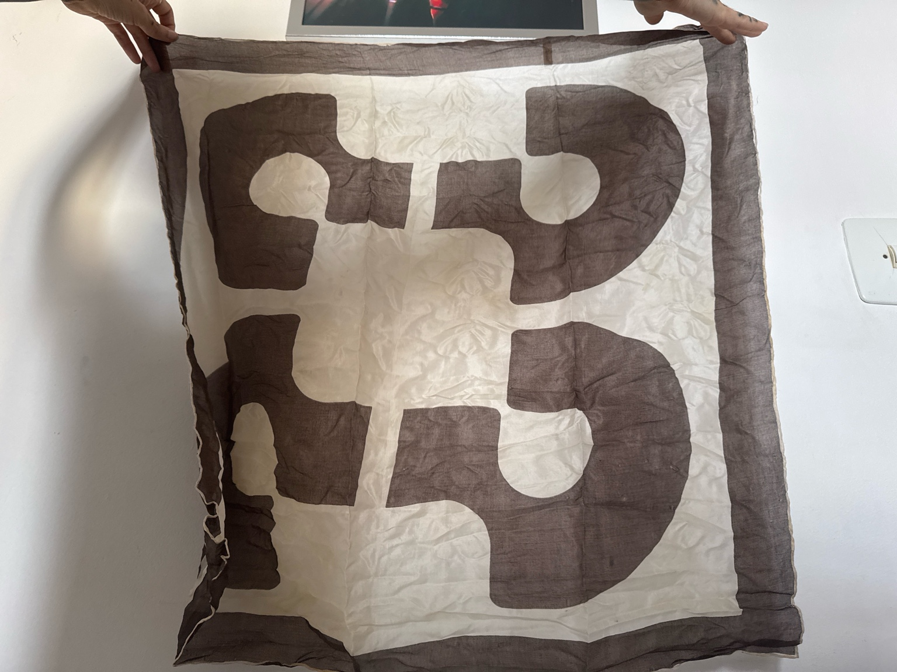
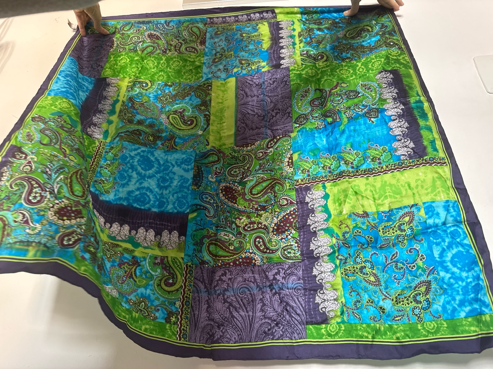
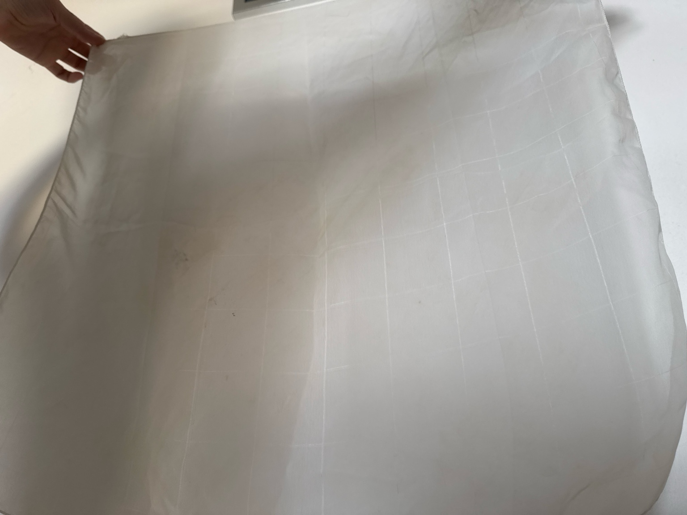
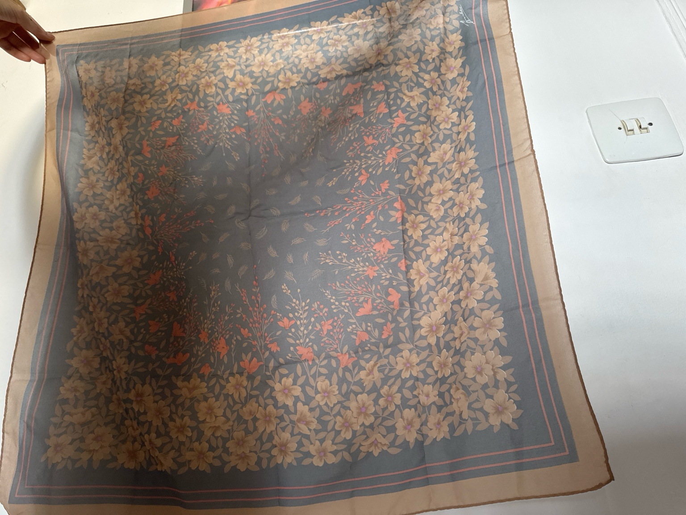

🃏 Lectura de Cartas - Tarot de Marsella
Consulta el significado de cada carta según su posición (pasado, presente o futuro) y orientación (derecha o invertida).
🃏 El Loco (0)
Al derecho
- Pasado: Un período de inestabilidad, impulsividad o búsqueda espiritual. Actuar sin planificación.
- Presente: Tiempo de nuevas posibilidades, ruptura de límites. Viaje interno o externo.
- Futuro: Decisiones impredecibles, libertad y riesgo. Todo está por construirse.
Invertido
- Pasado: Acciones impulsivas sin consecuencias previstas. Falta de responsabilidad.
- Presente: Desorden emocional o mental. Evadir responsabilidades.
- Futuro: Riesgo de repetir errores o perder el rumbo. Se aconseja centrarse.
🔙 Volver al índice
🪄 El Mago (I)
Al derecho
- Pasado: Inicio de un nuevo camino, decisiones tomadas con habilidad, etapa creativa o formativa.
- Presente: Potencial para actuar, confianza en uno mismo, energía creativa disponible. Tienes las herramientas para avanzar.
- Futuro: Se abren oportunidades, el éxito depende de tu iniciativa. Tiempo favorable para empezar algo nuevo.
Invertido
- Pasado: Manipulación, engaño o falta de acción. Mal uso del talento o energía desaprovechada.
- Presente: Falta de confianza, bloqueo creativo, riesgo de ser engañado o manipulado.
- Futuro: Obstáculos para comenzar algo, posibilidad de usar mal tus recursos. Precaución en acuerdos o propuestas.
🔙 Volver al índice
📚 La Papisa (II)
Al derecho
- Pasado: Sabiduría adquirida, introspección, aprendizaje profundo. Influencia de una figura sabia o maternal.
- Presente: Tiempo para observar, reflexionar y no actuar impulsivamente. Intuición muy desarrollada.
- Futuro: Revelación de secretos, comprensión interior, guía espiritual. Se recomienda esperar en silencio.
Invertido
- Pasado: Represión emocional, bloqueo intuitivo, falta de conexión espiritual.
- Presente: Dudas internas, secretos ocultos, intuiciones ignoradas. No es momento de hablar.
- Futuro: Posible malentendido, desinformación, falta de claridad. Precaución ante lo desconocido.
🔙 Volver al índice
👑 La Emperatriz (III)
Al derecho
- Pasado: Expansión personal, creatividad, comunicación fluida. Influencia de una mujer fuerte.
- Presente: Fertilidad (en ideas o proyectos), poder de atracción, creatividad y expresión.
- Futuro: Nacimiento de algo nuevo, ideas que se manifiestan. Éxito si se actúa con inteligencia emocional.
Invertido
- Pasado: Bloqueo creativo, mala comunicación, relaciones conflictivas con la figura materna.
- Presente: Dependencia emocional, celos o exceso de control. Dificultad para expresarse.
- Futuro: Retrasos en proyectos, relaciones estancadas. Se necesita trabajar la autoestima.
🔙 Volver al índice
🛡️ El Emperador (IV)
Al derecho
- Pasado: Fundación sólida, disciplina, figura paterna importante. Seguridad ganada con esfuerzo.
- Presente: Necesidad de estructura, liderazgo, establecer límites y orden. Autoridad firme.
- Futuro: Logros mediante control, organización y toma de decisiones responsables. Éxito profesional o familiar.
Invertido
- Pasado: Autoridad mal empleada, rigidez, falta de figura protectora o exceso de control.
- Presente: Desequilibrio entre control y libertad. Posible tiranía o rebeldía.
- Futuro: Conflictos con figuras de poder, dificultad para sostener estructuras. Se requiere flexibilidad.
🔙 Volver al índice
🙏 El Papa (V)
Al derecho
- Pasado: Influencia de valores tradicionales, guía espiritual o enseñanza recibida.
- Presente: Necesidad de consejo sabio, buscar conocimiento o actuar con ética y compasión.
- Futuro: Apoyo espiritual o institucional. Se resolverá con honestidad y fe. Tiempo de enseñar o transmitir.
Invertido
- Pasado: Rechazo a normas o consejos, actitudes dogmáticas, bloqueo en lo espiritual.
- Presente: Falta de dirección espiritual, mal consejo o guía deshonesta. Confusión moral.
- Futuro: Riesgo de fanatismo, intolerancia o manipulación bajo falsas creencias. Sé fiel a tu verdad.
🔙 Volver al índice
💘 Los Enamorados (VI)
Al derecho
- Pasado: Decisiones importantes relacionadas con el amor o los vínculos. Dilemas afectivos.
- Presente: Momento clave para elegir entre dos caminos. Amor, conexión, pero también compromiso.
- Futuro: Elección sentimental o moral que definirá tu camino. Éxito si sigues el corazón con claridad.
Invertido
- Pasado: Elecciones equivocadas en relaciones. Dudas emocionales o engaños.
- Presente: Confusión, triángulo amoroso, miedo al compromiso o dependencia afectiva.
- Futuro: Malas decisiones si no se actúa con honestidad. Atención a los vínculos dañinos o ilusorios.
🔙 Volver al índice
🛞 El Carro (VII)
Al derecho
- Pasado: Avance importante, superación de obstáculos, victoria personal. Decisión que impulsó un cambio.
- Presente: Fuerza de voluntad, dominio de la situación. Avance firme hacia una meta.
- Futuro: Éxito en lo que emprendas. Se requiere enfoque, dirección clara y autocontrol.
Invertido
- Pasado: Falta de dirección, impulsividad o derrota. Obstáculos por falta de control emocional.
- Presente: Estancamiento, caos interno, conflictos entre deseos opuestos.
- Futuro: Riesgo de desvío o fracaso por falta de enfoque. Se recomienda alinear mente y acción.
🔙 Volver al índice
⚖️ La Justicia (VIII)
Al derecho
- Pasado: Decisiones justas, actos responsables, momento de asumir consecuencias con madurez.
- Presente: Se requiere equilibrio, claridad mental y actuar con ética. Cuidado con juicios legales o personales.
- Futuro: Resultado justo, cosecharás lo que sembraste. Todo dependerá de tus actos actuales.
Invertido
- Pasado: Injusticia sufrida o provocada. Manipulación, decisiones desequilibradas.
- Presente: Falta de imparcialidad, errores legales o morales. Es momento de asumir responsabilidades.
- Futuro: Posible castigo o resultado desfavorable si no se actúa con integridad. Revisión profunda necesaria.
🔙 Volver al índice
🧙 El Ermitaño (IX)
Al derecho
- Pasado: Retiro voluntario o necesario, etapa de introspección y sabiduría adquirida.
- Presente: Se necesita paciencia, silencio y reflexión. No es momento de actuar rápido.
- Futuro: Camino de madurez interior. Se avecina una fase de búsqueda personal o aislamiento positivo.
Invertido
- Pasado: Soledad no comprendida, aislamiento emocional o rechazo a ayuda.
- Presente: Cerrarse al mundo, rigidez mental, desconexión con la intuición o con los demás.
- Futuro: Riesgo de encierro o estancamiento. Se debe reconectar con los demás y soltar el miedo.
🔙 Volver al índice
🎡 La Rueda de la Fortuna (X)
Al derecho
- Pasado: Cambios inesperados, ciclos cerrados, oportunidades aprovechadas o perdidas.
- Presente: Momento de transición. Las circunstancias están cambiando. Adaptarse es clave.
- Futuro: Golpe de suerte o giro del destino. Buena oportunidad si estás preparado para el cambio.
Invertido
- Pasado: Mala racha, ciclos repetitivos, resistencia al cambio.
- Presente: Sensación de estancamiento o de estar atrapado en un patrón. Cambio retrasado.
- Futuro: Riesgo de inestabilidad si no fluyes con el proceso. Se requiere soltar el control.
🔙 Volver al índice
🦁 La Fuerza (XI)
Al derecho
- Pasado: Control de emociones, superación de obstáculos con valentía y templanza.
- Presente: Fortaleza interior, autocontrol, perseverancia. Puedes enfrentar lo que venga.
- Futuro: Triunfo gracias a la resistencia emocional. Dominarás la situación con equilibrio.
Invertido
- Pasado: Reacciones impulsivas, miedo o falta de energía para afrontar desafíos.
- Presente: Dificultad para controlar emociones, sensación de debilidad o frustración.
- Futuro: Riesgo de perder el control. Se recomienda paciencia, compasión y firmeza interior.
🔙 Volver al índice
🔄 El Colgado (XII)
Al derecho
- Pasado: Sacrificio, pausa obligada, etapa de espera o renuncia por un bien mayor.
- Presente: Estancamiento temporal. Necesidad de ver las cosas desde otra perspectiva.
- Futuro: Cambios profundos tras una entrega personal. Tiempo de transformación interna.
Invertido
- Pasado: Resistencia al cambio, bloqueo espiritual o falta de propósito claro.
- Presente: Incapacidad de soltar, sentirte atrapado sin sentido. Falta de evolución.
- Futuro: Si no cambias tu visión, te estancarás. Necesitas soltar el control y fluir.
🔙 Volver al índice
☠️ La Muerte (XIII)
Al derecho
- Pasado: Cierre de etapa, transformación radical, fin necesario para renacer.
- Presente: Cambio inevitable. Termina algo para dejar paso a una nueva realidad.
- Futuro: Renacimiento profundo. El cambio será drástico pero liberador. Se abre un nuevo camino.
Invertido
- Pasado: Miedo a soltar, apegos que impidieron avanzar. Transformación bloqueada.
- Presente: Estancamiento por resistencia. Te aferras a lo viejo. Urge dejar ir.
- Futuro: Si no aceptas el cambio, la vida lo forzará. El final será necesario para evolucionar.
🔙 Volver al índice
🌬️ La Templanza (XIV)
Al derecho
- Pasado: Período de equilibrio emocional, comunicación armoniosa y sanación.
- Presente: Se requiere paciencia, diplomacia y moderación. Todo fluye, pero sin prisas.
- Futuro: Solución pacífica, reconciliación o sanación progresiva. Buen augurio si mantienes la calma.
Invertido
- Pasado: Desarmonía, falta de adaptación o comunicación bloqueada.
- Presente: Impaciencia, emociones inestables. Riesgo de actuar con exageración.
- Futuro: Posible ruptura si no se regula el equilibrio emocional. Se recomienda calma.
🔙 Volver al índice
😈 El Diablo (XV)
Al derecho
- Pasado: Apego a placeres, adicciones, pasiones intensas o relaciones tóxicas.
- Presente: Fuerte atracción material o sexual, dominio de instintos. Cuidado con manipulaciones.
- Futuro: Posible tentación o desequilibrio. Es clave tomar conciencia para no caer en ataduras.
Invertido
- Pasado: Dominio por miedos, obsesiones o dependencia. Influencia oscura o destructiva.
- Presente: Liberación difícil de cadenas autoimpuestas. El poder interno está bloqueado.
- Futuro: Si no tomas el control, alguien más lo tomará por ti. Rompe con lo que te domina.
🔙 Volver al índice
⚡ La Torre (XVI)
Al derecho
- Pasado: Crisis súbita, colapso necesario, fin inesperado. Algo se derrumbó para despertar.
- Presente: Choque con la realidad. La verdad se revela. Ruptura o revelación importante.
- Futuro: Cambio drástico e inevitable. Aunque difícil, abrirá paso a una reconstrucción auténtica.
Invertido
- Pasado: Ruina no asimilada, trauma que aún duele. Dolor negado.
- Presente: Caída lenta o evitada artificialmente. Se agrava si no se acepta el cambio.
- Futuro: Si no actúas, el derrumbe será peor. Hay que liberar lo que ya no sostiene.
🔙 Volver al índice
🌟 La Estrella (XVII)
Al derecho
- Pasado: Fe renovada, protección espiritual, momentos de inspiración y belleza interior.
- Presente: Esperanza, guía, armonía emocional. Buen augurio. Confía en el camino.
- Futuro: Se avecina una etapa luminosa y llena de bendiciones. Conexión profunda con tu propósito.
Invertido
- Pasado: Pérdida de fe o visión. Idealismo roto o frustraciones espirituales.
- Presente: Desconfianza, pesimismo o desconexión con la guía interior. Tiempo de sanar.
- Futuro: Se necesita reconectar con la luz interna. El futuro puede brillar si recuperas tu fe.
🔙 Volver al índice
🌙 La Luna (XVIII)
Al derecho
- Pasado: Confusión emocional, intuición intensa, recuerdos o sueños que influyeron.
- Presente: Misterios, engaños o ilusiones. Se recomienda escuchar tu intuición.
- Futuro: Camino incierto, pero lleno de revelaciones internas. La verdad saldrá a la luz.
Invertido
- Pasado: Miedos o mentiras no resueltas. Confusión profunda o engaños del pasado.
- Presente: Distorsión de la realidad, ansiedad, sueños engañosos. Peligro de autoengaño.
- Futuro: Si no se aclaran las emociones, el miedo dominará. Confía en tu intuición, no en apariencias.
🔙 Volver al índice
☀️ El Sol (XIX)
Al derecho
- Pasado: Alegría, éxito, relaciones saludables. Buen momento emocional o profesional.
- Presente: Claridad, verdad revelada, logros. Energía positiva a tu favor.
- Futuro: Prosperidad, vínculos armoniosos, objetivos alcanzados. Éxito asegurado.
Invertido
- Pasado: Oportunidades desperdiciadas, falta de gratitud, orgullo desmedido.
- Presente: Luz nublada por el ego o por dudas. Falta claridad emocional o mental.
- Futuro: Si no se valora lo presente, se oscurece lo que viene. Agradece, suelta el control.
🔙 Volver al índice
🎺 El Juicio (XX)
Al derecho
- Pasado: Llamado a despertar. Evento que marcó un antes y un después.
- Presente: Toma de conciencia, liberación, momento de decisiones cruciales.
- Futuro: Renacimiento, redención, destino cumplido. Se abren puertas tras asumir tu verdad.
Invertido
- Pasado: Juicio erróneo, decisiones apresuradas o falta de responsabilidad.
- Presente: Negación del llamado interior, estancamiento o arrepentimientos no asumidos.
- Futuro: Riesgo de repetir errores si no se aprende la lección. Se necesita rendición y claridad.
🔙 Volver al índice
🌍 El Mundo (XXI)
Al derecho
- Pasado: Culminación exitosa, logro de metas, armonía general. Experiencia integrada.
- Presente: Totalidad, plenitud, éxito. Estás en el lugar correcto, avanzando con propósito.
- Futuro: Final feliz, éxito global, expansión. Cumplirás una misión importante. Cierre perfecto.
Invertido
- Pasado: Incompletitud, falta de cierre. Círculo no cerrado emocional o espiritual.
- Presente: Sensación de vacío pese a los logros. Algo no se ha cerrado aún.
- Futuro: Se necesita terminar lo que se empezó. El éxito llega cuando completas el ciclo.
🔙 Volver al índice
🕯️ Velas Esotéricas
Las velas se utilizan en rituales para canalizar intenciones y energías. Su forma, color, composición y duración tienen un significado específico.
🍯 Vela de Miel
Composición
- Hecha con cera natural y miel pura
- Aroma dulce, vibración alta
Usos Esotéricos
- Rituales de atracción, amor y dulzura
- Conexión con energías cálidas y armónicas
- También se usa en limpiezas suaves o reconciliaciones
Recomendaciones
- Encender en viernes o en luna creciente para atraer afecto
- Puede combinarse con canela o azúcar para reforzar el efecto
🔙 Volver al índice
🕯️ Vela de Novena
Duración
- Encendida durante 9 días consecutivos
- No debe apagarse (usar vaso protector)
Usos Esotéricos
- Rituales de fe, milagros, peticiones profundas
- Invocaciones a santos, guías o energías superiores
Recomendaciones
- Preparar con oración o intención escrita
- No mover durante los 9 días
🔙 Volver al índice
🔁 Vela de 3 Días
Uso
- Encendida 3 días consecutivos o 3 veces al día
- Sirve para limpiezas, cortes o aperturas
Usos Esotéricos
- Liberación de malas energías
- Cambio de ciclos o rutinas
- Despojos emocionales o espirituales
Recomendaciones
- Ideal durante luna menguante
- Acompañar con sal gruesa o carbón activado
🔙 Volver al índice
🤍 Vela Blanca
Significado
- Paz, pureza, protección y claridad
- Conexión espiritual y limpieza
Usos Esotéricos
- Limpiezas energéticas y bendiciones
- Rituales de sanación o para pedir guía divina
- Reemplaza cualquier otro color si no se dispone
🔙 Volver al índice
🖤 Vela Negra
Significado
- Protección, absorción de energía negativa, fin de ciclos
- Transformación y defensa
Usos Esotéricos
- Rituales de corte, destierro o rompimiento
- Escudo ante envidias, brujerías o miedos
- Trabajo con la sombra o luna menguante
🔙 Volver al índice
❤️ Vela Roja
Significado
- Pasión, fuerza, deseo, vitalidad
- Amor físico y atracción
Usos Esotéricos
- Rituales de amor pasional y energía sexual
- Impulsar la valentía o iniciar proyectos
- Activación del chakra raíz
🔙 Volver al índice
🌸 Vela Rosa
Significado
- Amor puro, cariño, autoaceptación, reconciliación
- Suavidad emocional
Usos Esotéricos
- Rituales para sanar el corazón
- Atracción de relaciones sanas o amor propio
- Amistad, dulzura y ternura en el hogar
🔙 Volver al índice
🔵 Vela Azul
Significado
- Calma, comunicación, sabiduría y verdad
- Protección emocional y mental
Usos Esotéricos
- Rituales para armonía familiar o paz mental
- Apertura del chakra garganta
- Conexión con energías superiores
🔙 Volver al índice
💚 Vela Verde
Significado
- Abundancia, salud, fertilidad y crecimiento
- Conexión con la naturaleza
Usos Esotéricos
- Rituales de prosperidad económica o sanación física
- Apertura de caminos laborales o espirituales
- Trabajos con el chakra corazón
🔙 Volver al índice
💛 Vela Amarilla
Significado
- Inteligencia, claridad mental y creatividad
- Éxito académico y logros personales
Usos Esotéricos
- Rituales para exámenes, entrevistas y claridad de pensamiento
- Estimula la comunicación y el aprendizaje
- Activación del chakra del plexo solar
🔙 Volver al índice
💜 Vela Morada
Significado
- Espiritualidad, transmutación y sabiduría
- Conexión con el mundo astral y lo oculto
Usos Esotéricos
- Rituales de meditación, apertura del tercer ojo y evolución interior
- Trabajo con planos superiores y protección psíquica
- Limpieza profunda del aura
🔙 Volver al índice
🌟 Vela Dorada
Significado
- Éxito, abundancia, poder personal y bendición solar
- Fortuna, expansión y conexión con lo divino
Usos Esotéricos
- Rituales de atracción económica y liderazgo
- Trabajo con energía masculina, solar o arcángeles
- Aumentar la confianza y magnetismo
🔙 Volver al índice
🌙 Vela Plateada
Significado
- Intuición, energía lunar, sensibilidad y sueños
- Fuerza femenina y protección maternal
Usos Esotéricos
- Rituales durante fases lunares, especialmente luna llena
- Desarrollar la percepción, conexión con ancestros o guías
- Potenciar trabajos mágicos con agua o sueños
🔙 Volver al índice
🟫 Vela Marrón
Significado
- Estabilidad, justicia, conexión con la tierra
- Equilibrio y resolución de conflictos legales
Usos Esotéricos
- Rituales para juicios, causas legales o búsqueda de verdad
- Protección del hogar y animales
- Sanación del cuerpo físico
🔙 Volver al índice
🧡 Vela Naranja
Significado
- Entusiasmo, éxito rápido, motivación y alegría
- Fuerza emocional para superar obstáculos
Usos Esotéricos
- Rituales para atraer oportunidades o cerrar tratos
- Recuperación de energía personal y creatividad
- Chakra sacro y expresión artística
🔙 Volver al índice
🕯️ Rituales con Velas
Los rituales con velas permiten canalizar la intención a través del fuego, el color y la energía simbólica. Es importante realizarlos en un espacio limpio y con la mente clara.
❤️ Ritual para el Amor
Materiales
- 1 vela rosa (amor propio) o roja (pasión)
- Pétalos de rosa
- Miel o azúcar
- Papel y bolígrafo rojo
Procedimiento
- Escribe en el papel lo que deseas atraer (una relación sana, reconciliación, amor propio).
- Unta la vela con miel y rodéala con pétalos.
- Enciende la vela un viernes por la noche durante luna creciente o llena.
- Mientras arde, visualiza el amor llegando a tu vida.
- Quema el papel con cuidado en el fuego de la vela (opcional) y deja que se consuma en un recipiente seguro.
🔙 Volver al índice
🖤 Ritual de Protección
Materiales
- 1 vela negra o blanca
- Sal gruesa
- Plato o círculo de protección
- Ruda o laurel seco
Procedimiento
- Dibuja un círculo de sal gruesa y coloca la vela en el centro.
- Enciéndela visualizando un escudo a tu alrededor.
- Pasa la ruda alrededor de tu cuerpo (sin tocar la piel) y deja quemar unas hojas en el plato (con cuidado).
- Repite una oración de protección o tu nombre seguido de “estoy protegido/a”.
- Deja que la vela se consuma o apágala y repite durante 3 días.
🔙 Volver al índice
💨 Ritual de Limpieza Energética
Materiales
- 1 vela blanca
- Incienso de copal o sándalo
- Agua con sal o agua de luna
- Un recipiente o cuenco
Procedimiento
- Coloca la vela frente a ti y enciende el incienso.
- Rocía un poco de agua con sal a tu alrededor mientras respiras profundamente.
- Visualiza cómo se disuelven las malas energías y la vela purifica tu campo energético.
- Puedes frotarte las manos con el agua y pasarlas por la cabeza y el pecho.
- Apaga la vela con gratitud o déjala consumirse en su totalidad.
🔙 Volver al índice
💰 Ritual de Abundancia y Dinero
Materiales
- 1 vela verde o dorada
- Monedas o billetes pequeños
- Canela en polvo
- Hoja de laurel
- Papel con tu nombre y tu deseo
Procedimiento
- Coloca la vela en el centro de un plato, rodeada de monedas y billetes.
- Espolvorea canela sobre la vela y escribe tu petición en el papel.
- Coloca el papel debajo del plato y enciende la vela un jueves.
- Visualiza tu economía creciendo, sintiéndote merecedor/a.
- Guarda la hoja de laurel en tu cartera como amuleto.
🔙 Volver al índice
🌿 Ritual de Apertura de Caminos
Materiales
- 1 vela amarilla o naranja
- Hierbas secas (romero, albahaca, menta)
- Agua de luna o agua bendita
- Piedra (puede ser ojo de tigre o cuarzo rutilado)
Procedimiento
- Haz un pequeño círculo con las hierbas y coloca la vela en el centro.
- Enciende la vela y rocía un poco de agua sobre el espacio, invocando claridad y guía.
- Di en voz alta: “Que los caminos se abran ante mí, que mi energía fluya sin obstáculos”.
- Meditá 5 minutos sosteniendo la piedra.
- Guarda la piedra como talismán durante 7 días.
🔙 Volver al índice
🌕 Ritual de Conexión con la Luna
Materiales
- 1 vela plateada o blanca
- Un cuenco con agua de luna (o agua cargada al sereno)
- Hoja y pluma para escribir tu intención
- Piedra lunar o amatista
Procedimiento
- Enciende la vela en noche de luna llena, cerca de una ventana o al aire libre.
- Escribe tu intención o pregunta a la luna en el papel.
- Coloca la piedra dentro del cuenco con agua y deja que absorba su energía lunar.
- Medita mirando la vela y la luna (si es visible), recibiendo respuestas intuitivas.
- Usa esa agua para lavar tus manos o limpiar tus piedras al día siguiente.
🔙 Volver al índice
✂️ Ritual de Corte de Lazos Tóxicos
Materiales
- 1 vela negra o violeta
- Hilo o cordón rojo o negro
- Tijeras
- Papel con el nombre o situación que deseas cortar
Procedimiento
- Enciende la vela y escribe en el papel aquello de lo que te quieres liberar.
- Ata el cordón en forma de lazo simbólico y colócalo frente a la vela.
- Visualiza cómo te liberás del vínculo, luego corta el lazo con las tijeras.
- Quema el papel (si es seguro hacerlo) y deja que la vela se consuma.
🔙 Volver al índice
🏠 Ritual de Limpieza del Hogar
Materiales
- 1 vela blanca
- Agua con sal y vinagre
- Incienso de mirra o ruda
- Campana o cuenco tibetano (opcional)
Procedimiento
- Limpia físicamente la casa antes del ritual.
- Enciende la vela e incienso, comenzando por la entrada.
- Rocía con el agua cada esquina de la casa, avanzando en el sentido de las agujas del reloj.
- Haz sonar el cuenco o campana para romper densidades energéticas.
- Al finalizar, agradece y deja la vela encendida hasta que se consuma.
🔙 Volver al índice
🌌 Ritual para Sueños Lúcidos y Mensajes
Materiales
- 1 vela plateada o azul
- Infusión de lavanda o valeriana
- Amatista o piedra lunar
- Cuaderno y bolígrafo
Procedimiento
- Antes de dormir, enciende la vela y escribe tu intención en el cuaderno (“Quiero recibir un mensaje claro esta noche”).
- Toma la infusión lentamente y relájate en silencio.
- Medita unos minutos con la piedra en la mano o debajo de la almohada.
- Apaga la vela con respeto y duerme con el cuaderno cerca para anotar lo que sueñes.
🔙 Volver al índice
🩺 Ritual para la Salud
Materiales
- 1 vela verde o blanca
- Hierbas: eucalipto o romero seco
- Agua con sal marina
- Un recipiente pequeño
Procedimiento
- Limpia el espacio y coloca la vela en el centro de un altar simple.
- Enciende la vela y rodea su base con las hierbas medicinales.
- Rocía un poco de agua con sal sobre tus manos y pecho, visualizando la sanación.
- Repite: “La salud fluye en mí, todo se regenera con luz”.
- Deja consumir la vela y entierra las hierbas al terminar.
🔙 Volver al índice
💼 Ritual para el Éxito Profesional
Materiales
- 1 vela amarilla o dorada
- Papel y bolígrafo
- Canela y nuez moscada (en polvo)
- Moneda o símbolo laboral (tarjeta de presentación, por ejemplo)
Procedimiento
- Escribe tu objetivo laboral en el papel (ej. ascenso, nuevo empleo).
- Unta la vela con un poco de canela y nuez moscada, con intención.
- Coloca la moneda o símbolo laboral junto a la vela y enciéndela un lunes o miércoles.
- Visualiza el éxito y repite: “Merezco avanzar, el camino se abre para mí”.
- Guarda la moneda en tu cartera o escritorio como talismán.
🔙 Volver al índice
🧘 Ritual para el Equilibrio Emocional
Materiales
- 1 vela azul o rosa
- Infusión de manzanilla o lavanda
- Cuenco con agua
- Hoja con emociones que quieres equilibrar
Procedimiento
- Enciende la vela en un espacio tranquilo y toma algunos sorbos de la infusión.
- Escribe en el papel lo que deseas liberar o equilibrar (ansiedad, tristeza, ira...).
- Dobla el papel, colócalo bajo el cuenco con agua y pon las manos sobre él.
- Respira profundamente durante 5 minutos, visualizando serenidad.
- Apaga la vela y descarta el papel en agua corriente o entiérralo.
🔙 Volver al índice
🌱 Ritual para la Fertilidad
Materiales
- 1 vela verde o rosa
- Semillas o fruta (granada, manzana o higo)
- Agua de luna
- Foto tuya o símbolo del deseo de concebir
Procedimiento
- Realiza este ritual durante luna creciente.
- Coloca la vela frente a ti con las semillas/frutas alrededor.
- Enciende la vela y di: “Mi cuerpo y alma están listos para dar vida”.
- Visualiza la fertilidad creciendo como una semilla.
- Bebe un poco de agua de luna y guarda una semilla como amuleto.
🔙 Volver al índice
🔮 Ritual de Clarividencia e Intuición
Materiales
- 1 vela morada o plateada
- Espejo pequeño o bola de cristal
- Incienso de mirra o lavanda
- Amatista o piedra lunar
Procedimiento
- Haz este ritual de noche, preferentemente en luna llena.
- Enciende la vela y el incienso, y coloca el espejo frente a ti.
- Sostén la piedra mientras te concentras en la llama y luego en el espejo.
- Pide recibir imágenes, símbolos o mensajes desde tu intuición.
- Apunta en un cuaderno lo que veas o sientas tras unos minutos de enfoque.
🔙 Volver al índice
🔥 Ritual de Fortaleza Espiritual
Materiales
- 1 vela dorada o blanca
- Un cuarzo blanco o citrino
- Aceite esencial de sándalo o incienso
- Papel y lápiz
Procedimiento
- Ungir la vela con unas gotas del aceite, cargándola con tu intención.
- Escribe en el papel las afirmaciones: “Soy fuerte. Soy luz. Estoy protegido/a”.
- Enciende la vela y medita sujetando la piedra en tu mano dominante.
- Lee las afirmaciones en voz alta tres veces.
- Guarda el cuarzo contigo o en tu altar para sostener tu energía.
🔙 Volver al índice
🕯️ Ritual de Conexión con los Ancestros
Materiales
- 1 vela blanca o plateada
- Foto o símbolo de tus ancestros
- Hierbas: salvia blanca o laurel
- Cuenco con agua
Procedimiento
- Coloca la vela junto a la foto o símbolo familiar.
- Enciende la vela y purifica el espacio con la salvia o laurel.
- Habla en voz alta con tus ancestros, pidiendo guía, protección o consejo.
- Deja la vela encendida mientras meditas o escribes en tu diario lo que sientas.
- Apaga la vela con respeto y vierte el agua en una planta o lugar natural.
🔙 Volver al índice
⚖️ Ritual de Corte de Karma Ancestral
Materiales
- 1 vela violeta
- Papel y bolígrafo negro
- Hilo rojo
- Incienso de copal o mirra
Procedimiento
- Escribe en el papel los patrones que sientes repetir (miedo, pobreza, abandono...)
- Haz un lazo con el hilo alrededor del papel.
- Enciende la vela y el incienso, y di: “Corto todo karma que no me pertenece, libero mi linaje”.
- Quema el papel en un recipiente seguro y deja que la vela se consuma.
- Entierra las cenizas o tíralas al agua corriente.
🔙 Volver al índice
💧 Ritual de Purificación con Agua
Materiales
- 1 vela azul clara o blanca
- Cuenco con agua de luna, agua bendita o agua con sal
- Flores (jazmín, manzanilla o rosas)
- Piedra de cuarzo o amatista
Procedimiento
- Coloca la vela frente al cuenco con agua y flores.
- Enciende la vela y respira profundamente mientras pasas las manos sobre el cuenco.
- Visualiza cómo el agua absorbe todo lo negativo.
- Frota tus manos con el agua, o lava tu cara para sellar la limpieza.
- La piedra puede colocarse dentro del cuenco durante el proceso.
🔙 Volver al índice
🌘 Fases Lunares y su Influencia
La Luna rige los ritmos emocionales, la intuición y los ciclos mágicos. Cada fase lunar tiene un poder específico que puedes aprovechar en rituales, limpiezas, hechizos y crecimiento personal.
🌑 Luna Nueva
Significado: Es un momento de inicio, siembra de intenciones y renacimiento energético. Ideal para comenzar proyectos y limpiar energías pasadas.
Rituales: Escribe deseos, medita en silencio, realiza limpiezas con salvia o baños de descarga.
🔙 Volver al índice
🌒 Luna Creciente
Significado: Energía de expansión y atracción. Etapa ideal para trabajar la abundancia, el crecimiento personal, el amor y la salud.
Rituales: Encender velas verdes o rosas, escribir afirmaciones, trabajar con cristales para atraer lo deseado.
🔙 Volver al índice
🌓 Cuarto Creciente
Significado: Fuerza para superar obstáculos. Tiempo para tomar decisiones y avanzar con determinación.
Rituales: Visualización activa, baños energizantes, velas amarillas para potenciar la voluntad.
🔙 Volver al índice
🌕 Luna Llena
Significado: Punto máximo de energía. Ideal para manifestar, consagrar objetos, potenciar rituales de amor y abundancia.
Rituales: Baños de luna, cargas de cristales, rituales de gratitud y liberación.
🔙 Volver al índice
🌗 Cuarto Menguante
Significado: Tiempo de introspección y limpieza. Ideal para soltar, perdonar, cortar lazos o hábitos negativos.
Rituales: Rituales de corte, limpieza energética, velas negras o blancas, escribir lo que se quiere dejar atrás y quemarlo.
🔙 Volver al índice
🌘 Luna Menguante
Significado: Preparación para el cierre de ciclo. Muy útil para la reflexión y purificación profunda del alma.
Rituales: Meditación guiada, organización, descanso, dejar ir relaciones, apegos o energías estancadas.
🔙 Volver al índice
🌚 Luna Negra (oscura)
Significado: Fase muy poderosa para la brujería avanzada, conexión con el subconsciente y con lo oculto.
Rituales: Invocaciones, contacto con guías, rituales de sombras, sanación kármica o de vidas pasadas.
🔙 Volver al índice
✋ Lectura de Manos (Quiromancia)
La quiromancia es el arte de interpretar la personalidad, el destino y las experiencias de vida a través de las líneas y montes de la mano. Cada mano es única y contiene información profunda sobre el pasado, presente y futuro.
🖐️ Tipos de Mano
- Mano de Tierra: Palma cuadrada, dedos cortos. Práctica, estable, conectada a lo material.
- Mano de Aire: Palma cuadrada o rectangular, dedos largos. Intelectual, analítica, curiosa.
- Mano de Agua: Palma larga, dedos largos. Emocional, intuitiva, sensible.
- Mano de Fuego: Palma larga, dedos cortos. Apasionada, creativa, impulsiva.
🔙 Volver al índice
👈 ¿Qué Mano Leer?
Mano dominante (derecha en diestros): representa el presente y cómo se está usando el potencial.
Mano no dominante: muestra el destino original, el potencial nato y el karma ancestral.
🔙 Volver al índice
📏 Líneas Principales

- Línea de la Vida: Refleja la energía vital, salud y grandes cambios.
- Línea de la Cabeza: Muestra la inteligencia, forma de pensar y toma de decisiones.
- Línea del Corazón: Relacionada con las emociones, amor y vínculos afectivos.
- Línea del Destino: Indica la vocación, karma y dirección de vida (no siempre está presente).
🔙 Volver al índice
🧭 Líneas Secundarias

- Línea del Sol: Fama, éxito personal o artístico.
- Línea de la Intuición: Alta sensibilidad y percepción espiritual.
- Línea de los Viajes: Traslados, migraciones, movilidad.
- Línea de los Hijos: Relación con descendencia o proyectos creados.
🔙 Volver al índice
⛰️ Montes de la Mano

Los montes son las zonas abultadas debajo de los dedos. Cada uno tiene un significado:
- Monte de Venus (bajo el pulgar): Amor, pasión, energía vital.
- Monte de Júpiter (bajo el índice): Ambición, liderazgo, ego.
- Monte de Saturno (bajo el medio): Responsabilidad, karma, sabiduría.
- Monte de Apolo (bajo el anular): Creatividad, arte, éxito.
- Monte de Mercurio (bajo el meñique): Comunicación, astucia, negocios.
- Monte de la Luna (lateral de la palma): Intuición, emociones, imaginación.
🔙 Volver al índice
📍 Línea de la Vida
Empieza entre el dedo índice y el pulgar y rodea el Monte de Venus.
- Larga y profunda: Vitalidad fuerte, vida larga y activa.
- Corta pero clara: Persona enfocada, con buena gestión de su energía.
- Débil o discontinua: Cambios frecuentes, momentos de baja energía o crisis.
- Ramificaciones hacia arriba: Nuevos comienzos, viajes, ascenso personal.
- Ramificaciones hacia abajo: Obstáculos, decaimiento físico o emocional.
- Doble línea de la vida: Protección especial, buena suerte o energía extra.
🔙 Volver al índice
🧠 Línea de la Cabeza
Se extiende horizontalmente por el centro de la palma, indicando el pensamiento y la mente.
- Larga y recta: Mente lógica, estructurada, racional.
- Larga y curva: Creatividad, imaginación, pensamiento intuitivo.
- Corta: Persona práctica, directa, con enfoque a lo concreto.
- Con bifurcaciones al final: Dudas internas, indecisiones.
- Cruzada por otras líneas: Confusión mental, estrés.
- Unida a la línea de la vida al principio: Personalidad cautelosa o muy dependiente de la familia.
🔙 Volver al índice
❤️ Línea del Corazón
Ubicada en la parte superior de la palma, debajo de los dedos. Habla del amor, los vínculos y la capacidad emocional.
- Larga y profunda: Amor intenso, relaciones importantes.
- Corta: Independencia emocional, persona reservada.
- Curvada: Sensibilidad, romanticismo.
- Recta: Amor práctico, control emocional.
- Con bifurcaciones: Triángulos amorosos o confusión afectiva.
- Rota o fragmentada: Heridas del pasado, traumas emocionales.
- Empieza bajo el dedo índice: Idealismo y búsqueda de amor verdadero.
- Empieza bajo el dedo medio: Egoísmo o deseo de control en las relaciones.
🔙 Volver al índice
🌀 Línea del Destino
Va del centro de la palma hacia la base del dedo medio. Refleja vocación, camino de vida y karma.
- Presente y clara: Persona con fuerte sentido del propósito o misión.
- No presente: Vida más libre, autodirigida, sin destino fijo.
- Comienza desde la línea de la vida: Camino influenciado por la familia o el entorno cercano.
- Comienza desde la base de la palma: Fuerte determinación desde joven.
- Interrumpida o cortada: Cambios radicales de rumbo en la vida.
- Cruzada por líneas horizontales: Obstáculos o karmas externos que interfieren en la misión.
🔙 Volver al índice
🌟 Signos en las Líneas y la Palma
Además de las líneas principales, ciertos símbolos que aparecen en la mano pueden tener un gran valor esotérico o predictivo:
- ⭐ Estrella: Talento especial o destino marcado. Si aparece en el Monte de Júpiter: liderazgo natural.
- ✖️ Cruz: Desafío, sufrimiento o ruptura importante. Si está en el Monte de Venus: amor difícil.
- 🔺 Triángulo: Protección espiritual o habilidad oculta. Potencia en lo oculto si está cerca del Monte de la Luna.
- 🔳 Cuadrado: Protección ante accidentes o peligros. Es un símbolo de resguardo energético.
- 🔁 Isla: Periodo de confusión o pérdida. Puede representar enfermedades o desequilibrio emocional si está en la línea de la vida o del corazón.
- 🔲 Rejilla: Energía dispersa. Puede indicar bloqueos o dificultades para enfocar metas.
🔙 Volver al índice
🔄 Combinaciones Avanzadas
Una lectura completa combina las líneas entre sí y su relación con los montes:
-
Línea del Corazón larga + Monte de Júpiter elevado:
Persona idealista en el amor, que sueña con una pareja perfecta.
-
Línea de la Cabeza curva + Monte de la Luna amplio:
Imaginación desbordante, posible inclinación a la escritura o artes.
-
Línea del Destino clara + Monte de Saturno marcado:
Fuerte sentido de propósito, persona resiliente con destino profundo.
-
Línea de la Vida doble + Monte de Venus desarrollado:
Persona muy energética, cuidada por fuerzas espirituales o con gran vitalidad.
-
Ausencia de línea del Destino + líneas secundarias activas:
Vida autodirigida, persona que forja su propio camino con múltiples intereses.
🔙 Volver al índice
🔯 Cábala Mística
La Cábala es una tradición esotérica originaria del misticismo judío que busca comprender los secretos del universo, el alma humana y la conexión con lo divino. A través de símbolos, letras, números y estructuras energéticas, la Cábala permite explorar los caminos del Árbol de la Vida y la creación.
🌳 El Árbol de la Vida
El Árbol de la Vida es el símbolo central de la Cábala. Representa el mapa del alma y del universo. Está compuesto por 10 esferas llamadas Sefirot y 22 senderos que las conectan.
- Keter (Corona): Unión con lo divino, la chispa de la creación.
- Chokmah (Sabiduría): Energía pura, intuición, lo masculino cósmico.
- Binah (Entendimiento): Receptividad, forma, lo femenino cósmico.
- Chesed (Misericordia): Amor expansivo, generosidad.
- Gevurah (Rigor): Justicia, disciplina, límites.
- Tiferet (Belleza): Armonía, equilibrio entre extremos.
- Netzach (Victoria): Pasión, impulso creativo, acción.
- Hod (Gloria): Intelecto, estrategia, comunicación.
- Yesod (Fundamento): Inconsciente, sueños, sexualidad, canal de manifestación.
- Malkuth (Reino): Mundo material, manifestación física, la Tierra.
🔙 Volver al índice
🌀 Las 22 Letras Hebreas
Las letras hebreas son consideradas canales energéticos, cada una con un valor numérico y un poder vibracional. En la Cábala, las 22 letras conectan las Sefirot del Árbol de la Vida.
Ejemplos:
- א (Alef): Espíritu, aliento divino, unidad suprema.
- ב (Bet): Dualidad, casa, receptividad.
- מ (Mem): Agua, sabiduría oculta, transformación.
- ש (Shin): Fuego sagrado, transformación, alma.
Estudiarlas activa circuitos internos de conciencia.
🔙 Volver al índice
🔢 Gematría y Números Cabalísticos
La gematría es un sistema que interpreta palabras hebreas a través de sus valores numéricos. Así se revelan significados ocultos y correspondencias místicas.
Ejemplos:
- 26 = יהוה (YHVH): El nombre sagrado del Creador.
- 18 = חי (Jai): Vida. Considerado un número de buena suerte.
- 72: Nombres de Dios. Se utilizan en meditación y protección espiritual.
🔙 Volver al índice
🌈 Las 10 Sefirot en detalle
Cada Sefirá representa una emanación divina. Conectarlas en meditación o ritual ayuda a equilibrar cuerpo, mente y alma.
- 1. Keter (Corona)
Color: Blanco puro o dorado
Ángel: Metatrón
Chakra: Coronilla (Sahasrara)
Significado: Fuente divina, voluntad suprema, el Todo
Ritual: Meditación en silencio total, conexión con el Ser Superior
- 2. Chokmah (Sabiduría)
Color: Gris o azul eléctrico
Ángel: Raziel
Chakra: Tercer ojo (Ajna)
Significado: Inspiración divina, impulso creativo masculino
Ritual: Visualización creativa, oráculo o canalización
- 3. Binah (Entendimiento)
Color: Negro o índigo
Ángel: Tzaphkiel
Chakra: Tercer ojo (Ajna)
Significado: Contención, estructura, principio femenino cósmico
Ritual: Escribir y comprender sueños, meditación con obsidiana
- 4. Chesed (Misericordia)
Color: Azul real
Ángel: Zadkiel
Chakra: Corazón (Anahata)
Significado: Amor expansivo, benevolencia
Ritual: Ofrendas, actos de bondad, visualización de luz azul
- 5. Gevurah (Rigor)
Color: Rojo
Ángel: Kamael
Chakra: Plexo solar (Manipura)
Significado: Justicia, disciplina, fuerza interior
Ritual: Cortes energéticos, protección con velas rojas
- 6. Tiferet (Belleza)
Color: Amarillo dorado
Ángel: Rafael
Chakra: Corazón (Anahata)
Significado: Armonía, compasión, sanación
Ritual: Meditación con cuarzo rosa, afirmaciones de equilibrio
- 7. Netzach (Victoria)
Color: Verde esmeralda
Ángel: Haniel
Chakra: Sacro (Swadhisthana)
Significado: Deseo, pasión, impulso, arte
Ritual: Danza consciente, velas verdes, invocación de creatividad
- 8. Hod (Gloria)
Color: Naranja o ámbar
Ángel: Miguel
Chakra: Garganta (Vishuddha)
Significado: Comunicación, razonamiento, expresión
Ritual: Escritura automática, invocación con salmos
- 9. Yesod (Fundamento)
Color: Violeta o plateado
Ángel: Gabriel
Chakra: Raíz (Muladhara) y sexualidad
Significado: Puente entre lo espiritual y lo físico
Ritual: Limpiezas con agua, trabajos con luna llena
- 10. Malkuth (Reino)
Color: Marrón, negro, verde oscuro
Ángel: Sandalfón
Chakra: Raíz (Muladhara)
Significado: Manifestación, tierra, cuerpo, realidad
Ritual: Caminar descalzo, rituales con cristales, conexión con la Tierra
🔙 Volver al índice
✨ Usos Mágicos y Meditativos de la Cábala
La Cábala no es solo un conocimiento teórico: es una herramienta para la transformación espiritual, la protección energética y la conexión con los planos superiores.
🧘 Meditación con el Árbol de la Vida
- Visualiza el Árbol completo desde la base (Malkuth) hasta la corona (Keter), subiendo por cada Sefirá con su color y palabra clave.
- Respira profundamente en cada Sefirá e imagina que activas esa energía dentro de ti.
- Utiliza la frase: “Yo soy el canal de la Luz Divina” para cerrar la sesión.
🕯️ Ritual de alineación energética con velas
Coloca 10 velas en forma de Árbol de la Vida (puedes usar los colores de cada Sefirá).
- Enciende desde Malkuth hacia Keter, pidiendo limpieza, expansión y claridad espiritual.
- Puedes añadir cristales correspondientes (ej. amatista en Keter, cuarzo rosa en Tiferet).
🔢 Trabajo con números cabalísticos
- Medita en el número 72 y recita el nombre de un ángel del Shem haMephorash (uno de los 72 nombres de Dios) para protección.
- Ejemplo: “Vehuiah” – energía de nuevos comienzos y voluntad divina.
🧿 Protección con la Cábala
- Dibuja el Árbol de la Vida o las letras hebreas en papel pergamino con tinta dorada.
- Llévalo contigo como talismán de protección energética.
- También puedes escribir el nombre de un ángel protector cabalístico en hebreo (ej. מיכאל – Miguel).
🌕 Meditación lunar con Sefirot
- En Luna Llena, trabaja con Yesod para manifestar sueños, visiones y limpieza energética.
- Escribe tus intenciones y visualízalas subiendo por las esferas hasta Tiferet.
🔙 Volver al índice
🧿 Amuletos Cabalísticos y Símbolos Sagrados
Los amuletos cabalísticos se emplean desde hace siglos para atraer protección, luz, sanación y guía espiritual. Pueden estar dibujados en pergamino, colgados como colgantes o incluso visualizados en meditación.
🌳 El Árbol de la Vida
- Símbolo central de la Cábala.
- Puede usarse como meditación visual o como talismán para armonía y evolución espiritual.
- Colgado en espacios sagrados, armoniza la energía y atrae equilibrio.
🔢 Los 72 Nombres de Dios (Shem haMephorash)
- 72 combinaciones de tres letras hebreas extraídas del Éxodo 14:19–21.
- Cada uno corresponde a un ángel protector y una frecuencia espiritual.
- Ejemplos comunes:
- Vehuiah (והו): Renovación, nuevos comienzos.
- Lelahel (להה): Sanación y creatividad.
- Aladiah (עלד): Protección contra el mal.
- Se escriben en hebreo, en pergaminos o piedras, y se medita con ellos.
🔯 El Tetragrámaton – יהוה (YHVH)
- El Nombre Sagrado de Dios en hebreo: Yod–He–Vav–He.
- No debe pronunciarse, solo meditarse o visualizarse.
- Usado en rituales de limpieza, consagración y conexión divina.
🧿 Otros símbolos comunes
- Menorá: Candelabro de 7 brazos. Luz divina, guía y revelación.
- Hamsa: Mano protectora contra el mal de ojo. Frecuente en colgantes.
- Estrella de David: Equilibrio entre el cielo y la tierra, espíritu y materia.
📜 Cómo usarlos
- Dibújalos en pergamino con tinta ritual (dorado, plata o rojo).
- Cárgalos bajo la luna llena o al sol durante 72 horas.
- Conságralos con salmos, velas o recitación silenciosa.
- Guárdalos cerca del corazón, debajo de la almohada o en tu altar.
🔙 Volver al índice
🔮 Péndulos: Herramientas de Adivinación, Sanación y Magia
El péndulo es una de las herramientas esotéricas más versátiles. Permite canalizar respuestas del inconsciente, explorar el campo energético y realizar rituales de adivinación, sanación o limpieza. Sus propiedades varían según el material, la forma y la intención.
🔸 Tipos de Péndulos
💎 Péndulos de Cristales Naturales
Conectan con las propiedades energéticas del mineral. Elegir el adecuado potencia el trabajo espiritual:
- Citrino: Abundancia, claridad mental, activación del plexo solar. Atrae éxito y optimismo. Ideal para lecturas financieras o decisiones importantes.
- Cuarzo Transparente: Neutro y amplificador. Se adapta a cualquier intención. Usado para calibrar otros péndulos.
- Amatista: Intuición, espiritualidad, calma interior. Excelente para adivinación profunda y desbloqueo del tercer ojo.
- Obsidiana Negra: Protección psíquica, revelación de verdades ocultas. Ideal para limpiezas y sanación emocional.
- Turmalina Negra: Protección contra energías densas. Limpieza de chakras inferiores y defensa energética.
- Cuarzo Rosa: Amor propio, reconciliación, sanación afectiva. Adecuado para temas de pareja o autoestima.
- Lapislázuli: Comunicación espiritual, claridad psíquica. Perfecto para canalizar mensajes del guía interior.
- Ojo de Tigre: Protección, confianza, coraje. Trabaja el chakra raíz y plexo solar. Excelente para limpiezas en espacios.
- Jaspe Rojo: Energía vital, arraigo, conexión con la tierra. Útil para fortalecer el cuerpo físico.
- Fluorita: Organización mental, claridad en decisiones. Ideal para preguntas concretas y trabajo con adolescentes.
🔩 Péndulos Metálicos
- Latón: Muy sensible. Usado en diagnósticos energéticos y radiestesia médica.
- Cobre: Gran conductor de energía. Usado en sanación y desbloqueos de chakras.
- Bronce: Estable y neutral. Preferido por profesionales por su equilibrio.
- Plata (bañada): Canalización lunar, intuición. Usado en rituales femeninos o de sueños.
🌳 Péndulos de Madera
- Madera Natural: No retiene energía. Ideal para principiantes y trabajos con niños o animales.
- Maderas consagradas (roble, nogal, palo santo): Aportan protección, poder natural y purificación.
📦 Péndulos Testigo
Contienen una cápsula interna para guardar una muestra (cabello, foto, papel). Usados en:
- 🔍 Búsqueda de personas, objetos o energías a distancia.
- 🧬 Diagnóstico energético con testigos físicos.
🌀 Péndulos Universales / Geométricos
- Forma cónica, esférica, hexagonal o dodecaédrica: Proporciones sagradas que potencian la precisión.
- Egipcio, Merkaba, Isis, Karnak: Diseños ancestrales usados en alta magia y sanación energética profunda.
🖐️ Péndulos Personalizados
- Fabricados con un objeto personal, conchas, dientes, semillas, huesos u objetos mágicos.
- Se cargan con intención. Se usan en prácticas de magia ancestral, chamanismo o brujería tradicional.
🔙 Volver al índice
🕯️ Usos Mágicos y Rituales con Péndulos
- Lectura de sí/no: Movimiento circular o lineal tras preguntar.
- Diagnóstico de chakras: Se pasa sobre cada uno para ver su estado (movimiento armónico = abierto).
- Limpieza energética: Oscilación antihoraria sobre personas u objetos bloqueados.
- Carga lunar: Coloca el péndulo sobre un paño blanco bajo la Luna llena durante toda la noche.
- Ritual de consagración: Pasa el péndulo sobre humo de incienso mientras repites su intención: "Te consagro como canal de verdad y luz".
🔙 Volver al índice
🔮 Cómo Leer el Futuro con un Péndulo
La lectura consiste en formular preguntas específicas (sí/no) o usar un tablero con letras, números o palabras. Es ideal para tomar decisiones, confirmar intuiciones o explorar situaciones ocultas.
🧭 Métodos de interpretación:
- Movimiento circular horario: Sí / Energía afirmativa
- Movimiento circular antihorario: No / Energía negativa
- Adelante y atrás: Sí (confirmado)
- Izquierda a derecha: No (rechazo)
- Oscilación errática: Energía bloqueada o respuesta no disponible
También puede usarse sobre tableros de letras para obtener nombres, palabras, fechas u oráculos canalizados.
🔙 Volver al índice
🧿 Cómo Crear tu Propio Péndulo
Un péndulo hecho por ti misma, con tus manos y energía, puede convertirse en una de las herramientas más poderosas de tu práctica esotérica. Aquí aprenderás a crear el tuyo paso a paso, con intención y conexión espiritual.
🔹 Materiales necesarios
- Una piedra personal: Preferiblemente con forma alargada o cónica (citrino, amatista, cuarzo, etc.).
- Hilo, cadena o cordón: De unos 15 a 20 cm. Puede ser hilo encerado, cuerda de cuero, o cadena metálica fina.
- Un gancho, aro, pegamento o alambre: Para sujetar la piedra si no tiene agujero.
- Incienso, vela blanca, sal y un vaso de agua: Para el ritual de consagración.
🔙 Volver al índice
🔨 Paso a paso para construirlo
- 1. Elige tu piedra: Lo ideal es que ya esté conectada contigo. Si es de citrino, reforzará la claridad y la toma de decisiones.
- 2. Limpieza previa: Déjala en agua con sal durante una noche o pásala por humo de salvia/incienso. Luego déjala a la luz de la luna.
- 3. Sujétala: Si tiene agujero, pasa el hilo. Si no, usa alambre fino para hacer un soporte o una malla que la sujete sin dañarla.
- 4. Ata el extremo superior: Haz un nudo o engancha un anillo para sujetar cómodamente con los dedos.
🔙 Volver al índice
🕯️ Ritual de consagración del péndulo
Este paso es vital. No basta con montarlo, debes conectarlo a tu energía y darle una función espiritual.
- Prepara un altar simple: vela blanca, incienso, un círculo de sal, y el péndulo al centro.
- Sujétalo entre tus manos y repite con intención:
“Yo te consagro como herramienta de luz, canal de sabiduría, guía del alma. Que tu movimiento sea claro, tus respuestas verdaderas, y tu energía pura.”
- Pasa el péndulo por el humo del incienso tres veces en sentido horario.
- Déjalo bajo la luz de la luna (especialmente luna llena) toda la noche.
🔙 Volver al índice
📍 Calibración: cómo saber cómo responde tu péndulo
Una vez consagrado, debes preguntarle cómo responde a las preguntas:
- “Muéstrame un sí” → observa el movimiento (circular, lineal, etc.)
- “Muéstrame un no” → espera su movimiento y memorízalo
Cada péndulo puede responder distinto según su energía y forma. Practica hasta identificar sus patrones naturales.
🔙 Volver al índice
🧽 Limpieza y cuidado
- Límpialo regularmente con humo, sal marina o luz lunar.
- No lo prestes a otras personas si lo usas para prácticas personales o mágicas.
- Guárdalo en una bolsita de tela o caja de madera limpia.
🔙 Volver al índice
🧘♀️ Consejo final
Un péndulo hecho por ti tiene una frecuencia vibratoria alineada con tu campo energético. Si lo utilizas con respeto, se convertirá en un puente entre tu intuición y el plano invisible.
🔙 Volver al índice
🔱 Rituales de Unión para Dos Almas Número 1
El número 1 en numerología representa el inicio, el liderazgo, el poder de manifestación, la chispa divina. Dos personas con este número pueden ser individualistas pero, cuando están alineadas, forman una pareja altamente poderosa y canalizadora.
🌿 Ritual de Afirmación del Vínculo Creador
Objetivo: Unir energías creadoras para comenzar un nuevo ciclo, proyecto o etapa.
- Día ideal: Domingo (día del Sol)
- Hora solar en Valencia: entre las 12:00 y 14:00 (hora solar real)
- Materiales: Dos velas naranjas, papel dorado, citrino y amatista, un bol con agua
- Ambas escriben en su papel una afirmación positiva con "Nosotras somos..." (Ej: “Nosotras somos fuego creador que transforma”).
- Colocan las piedras al centro, rodeadas por las velas encendidas.
- Repiten juntas la afirmación 3 veces, mientras visualizan una espiral de luz dorada envolviendo sus cuerpos.
- El papel se quema en la llama de ambas velas y las cenizas se disuelven en el bol con agua.
- El agua puede verterse en una planta que cuiden entre las dos.
🔙 Volver al índice
🔥 Círculo de Fuego: Reforzar Intenciones Mutuas
Objetivo: Canalizar una intención en común con acción directa.
- Materiales: Incienso de canela, 4 velas rojas formando un círculo, una piedra de acción (jaspe rojo o cornalina)
- Preparación: Cada una entra al círculo por un lado opuesto, llevando una intención escrita. Encienden las velas al entrar.
- Ritual: Se sientan al centro, comparten sus intenciones en voz alta y colocan los papeles al centro, debajo de la piedra. Meditan juntas 7 minutos visualizando el resultado manifestado.
- Cierre: Apagan las velas y entierran los papeles bajo tierra en su zona o en una maceta consagrada.
🔙 Volver al índice
🌊 Baño Solar Compartido con Propósito
Objetivo: Limpiar bloqueos y cargar la energía conjunta con el poder solar de Valencia.
- Ingredientes: Agua con sal del mar, cáscaras de naranja seca, pétalos de girasol, esencia de romero
- Procedimiento: Se bañan juntas al mediodía con esta mezcla (puede ser en la ducha si no hay bañera), visualizando el sol bañándolas en luz blanca y dorada.
- Se repite: “Renacemos como una fuerza imparable. Desde el uno al infinito.”
🔙 Volver al índice
🌞 Rituales Solares y de Fuego para Liderazgo Dual
El Sol rige la energía vital, el ego, el propósito. Como dos almas número 1, vuestro fuego interior se magnifica con el trabajo consciente de esta energía. Estos rituales están pensados para empoderar vuestros caminos individuales sin perder la unión, aprovechando la fuerza solar del Mediterráneo.
🔥 Ritual del Sol Naciente: Activar el Liderazgo Diario
Objetivo: Activar la energía líder y la acción decidida cada día o al comenzar un nuevo ciclo.
- Momento ideal: Al amanecer, mirando al este
- Materiales: Vela amarilla, una piedra citrino o pirita, un pequeño espejo redondo, papel y bolígrafo
- Ambas escriben en un papel su afirmación del día. Ejemplo: “Hoy actúo desde mi fuego interno con amor y claridad”.
- Colocan el espejo en el centro, la vela delante y la piedra encima del papel.
- Encended la vela al salir el sol y repetid en voz alta vuestras afirmaciones.
- Visualizad el fuego del sol entrando por el entrecejo y recorriendo el cuerpo hasta los pies.
- Guardad los papeles en un frasco o caja solar como registro de afirmaciones poderosas.
🔙 Volver al índice
🌞 Danza Solar para el Empoderamiento en Pareja
Objetivo: Activar la confianza, energía sexual y carisma entre vosotras.
- Materiales: Música tribal o percusión, incienso de canela o naranja, velas doradas o anaranjadas
- Lugar: Un espacio privado con suelo libre o al aire libre si es posible
- Cread un pequeño círculo de velas (seguro) con el incienso al centro.
- Ambas se mueven libremente, con los ojos cerrados, durante unos minutos. Cada una siente su fuego y el de la otra.
- En un momento acordado, os abrazáis al centro y repetís: “Juntas brillamos. Juntas somos Sol.”
- Dejad encenderse mutuamente una vela como símbolo de reconocimiento mutuo.
🔙 Volver al índice
☀️ Carga Solar de Objetos Rituales
Objetivo: Potenciar el poder de amuletos, piedras o herramientas mágicas que uséis juntas.
- Materiales: Cualquier objeto ritual que deseen cargar, una bandeja blanca o tela clara, sal marina, aceite de naranja (opcional)
- Sobre la tela o bandeja, colocad los objetos rodeados con un poco de sal formando un círculo.
- Dejadlos al sol directo durante mínimo 3 horas (idealmente mediodía en Valencia).
- Si lo deseáis, ungidlos después con aceite de naranja en la base o extremos.
- Guardadlos en el altar compartido o en una bolsita consagrada.
🔙 Volver al índice
💠 Rituales que es Mejor Realizar por Separado
En toda práctica espiritual compartida, también es importante saber cuándo cada una debe trabajar por su cuenta. Aunque compartáis energía y propósito, existen limpiezas, canalizaciones y desbloqueos que se procesan mejor de forma individual para evitar transferencia energética no deseada.
🧿 Limpieza Energética con Humo
Objetivo: Eliminar bloqueos, energías externas o pesadas que hayáis absorbido.
- Materiales: Salvia blanca, palo santo o mirra, piedra protectora (turmalina negra u obsidiana), cuenco con sal
- Encended el sahumerio y rodead vuestro cuerpo con el humo lentamente (preferentemente desnuda o con ropa ligera).
- Visualizad cómo el humo arrastra todo lo denso y lo deposita en la sal del cuenco.
- Terminad agradeciendo y colocad la piedra en vuestro chakra raíz (zona del pubis o entrepierna) durante unos minutos.
⚠️ Este ritual NO debe realizarse juntas para no intercambiar las energías que se están liberando.
🔙 Volver al índice
🪬 Canalización de Guías Espirituales
Objetivo: Recibir mensajes, visiones o guía personal sin influencias externas.
- Requiere: Espacio silencioso, vela blanca, piedra amatista o angelita, libreta de anotaciones
- Encended la vela y sostened la piedra entre las manos.
- Respirad profundamente 7 veces, cerrando los ojos y pidiendo claridad.
- Dejad que vengan imágenes, palabras o sensaciones sin juzgar. No intentéis dirigir el mensaje.
- Al finalizar, anotad todo lo percibido sin filtro. La interpretación puede venir días después.
Tip: Si hacéis esto el mismo día, acordad hacerlo en habitaciones distintas y compartidlo luego, si así lo sentís.
🔙 Volver al índice
🌀 Descarga Emocional con Agua y Tierra
Objetivo: Liberar tensiones acumuladas, estrés o emociones densas personales.
- Materiales: Cuenco con agua y sal, tierra o arena, vela azul o verde
- Encended la vela y sumid los dedos en el agua salada por unos minutos.
- Después, enterrad los dedos en la tierra mientras respiráis profundamente y nombráis en voz baja lo que queréis soltar.
- Al terminar, agradeced a los elementos y descartad el agua y la tierra en la naturaleza o en una maceta seca.
Este ritual es ideal para no cargar a la pareja con emociones propias y mantener el equilibrio entre ambas.
🔙 Volver al índice
💎 Piedras para Usar Juntas o por Separado
En una práctica compartida, las piedras actúan como canalizadores de energía y pueden amplificar o absorber lo que se está trabajando. No todas son aptas para compartir, ya que algunas contienen propiedades de limpieza o absorción que pueden generar transferencia energética entre vosotras.
🌕 Piedras que SÍ se pueden compartir
Estas piedras amplifican el amor, el crecimiento conjunto, la intuición y la paz. Son ideales para el altar, rituales compartidos y amuletos en pareja.
- Cuarzo rosa: Amor incondicional y conexión emocional.
- Citrino: Prosperidad conjunta, creatividad.
- Selenita: Purificación del vínculo y espacio.
- Piedra luna: Intuición cíclica y conexión femenina.
- Labradorita: Protección compartida, magia y visión conjunta.
- Ágata rosa: Estabilidad amorosa y confianza.
- Ágata musgosa: Renacimiento, crecimiento emocional.
- Fluorita: Claridad mental, sincronización de ideas.
- Aventurina verde: Buena suerte y armonía común.
- Jade verde: Abundancia y salud en pareja.
- Rodonita: Curación emocional conjunta.
- Lepidolita: Reducción de ansiedad, paz dual.
- Ambar: Vitalidad solar, protección cálida.
- Calcita naranja: Placer, fertilidad de ideas.
- Howlita: Comunicación calmada, paciencia.
- Azurita: Expansión psíquica y espiritual.
- Angelita: Conexión con guías y energía elevada.
- Celestina: Paz divina, canalización compartida.
- Unakita: Equilibrio entre emociones y acción.
- Fucsita: Curación del corazón y alegría compartida.
- Aragonita: Enraizamiento colectivo, calma mutua.
- Calcita azul: Diálogo amoroso y resolución pacífica.
- Prehnita: Conexión espiritual protectora y lealtad.
- Danburita: Amor puro y espiritualidad en pareja.
🔙 Volver al índice
⚠️ Piedras que NO se deben compartir
Estas piedras absorben, transforman o protegen a nivel individual. Usarlas por ambas puede causar transferencia energética o conflictos.
- Obsidiana negra: Sombra profunda, sanación individual.
- Turmalina negra: Protección personal intensa.
- Hematites: Enraizamiento propio, centrado personal.
- Onix: Escudo emocional, no apto para doble uso.
- Amatista (en canalización): Se impregna del canalizador.
- Ojo de tigre: Poder personal y defensa del ego.
- Shungita: Alta absorción, limpieza de toxinas.
- Granate: Sexualidad intensa y fuego personal.
- Kyanita negra: Cortes de lazos, debe ser individual.
- Crisocola: Emociones profundas e introspección.
- Magnetita: Dualidad fuerte, desequilibra si se comparte.
- Azurita con malaquita: Transformación y desbloqueo personal.
- Pirita: Protección de proyectos personales, ambición.
- Charoita: Transmutación del alma, guía interior.
- Serafinita: Elevación espiritual personal intensa.
- Indicolita (turmalina azul): Comunicación interior, emocionalidad privada.
- Obsidiana nevada: Dualidad sombra/luz personal.
- Herkimer (cuarzo diamante): Canal psíquico muy individual.
- Jet (azabache): Protección contra el mal de ojo, absorción de energías.
🔙 Volver al índice
🔮 Ritual para consagrar piedras compartidas
Objetivo: Conectar las piedras elegidas con el propósito común de la pareja.
- Materiales: Cuenco con agua de luna, sal marina, dos velas blancas, tela violeta
- Colocad las piedras en el cuenco con agua, rodeado por las velas encendidas.
- Cada una toca el agua con los dedos y recita en voz alta su propósito conjunto (ej: “Estas piedras canalizan nuestra energía armoniosa”).
- Retirad las piedras y secadlas con la tela violeta.
- Guardadlas en una bolsita común o en el altar dual.
Repetid este proceso si sentís que la piedra perdió fuerza o se sobrecargó.
🔙 Volver al índice
🔮 Consagración y Cuidado de Piedras Compartidas
Estas piedras pueden amplificar el amor, la visión compartida, el equilibrio y la conexión energética de la pareja. Para ello, deben ser activadas juntas, limpiadas con regularidad y almacenadas con respeto.
🌸 Cuarzo Rosa
Consagración: Colocad el cuarzo en vuestras manos entrelazadas mientras recitáis juntas: “Este cristal manifiesta nuestro amor puro, dulce y eterno”.
Limpieza: Agua de luna llena + humo de palo santo.
Guardado: En tela rosa o en el centro del altar común.
🔙 Volver al índice
☀️ Citrino
Consagración: Dejad el citrino al sol durante 30 minutos mientras visualizáis vuestros objetivos conjuntos manifestándose.
Limpieza: Aire fresco + sonido (campana, cuenco tibetano).
Guardado: En bolsita dorada o de lino amarillo, cerca del área de trabajo compartido.
🔙 Volver al índice
🌙 Piedra Luna
Consagración: Colocadla bajo la luz de la luna creciente sobre un cuenco de agua. Decid: “Sincronizamos nuestros ciclos, sueños y energías femeninas”.
Limpieza: Agua con pétalos blancos + incienso de jazmín.
Guardado: En caja de madera con símbolos lunares o runas.
🔙 Volver al índice
⚡ Selenita
Consagración: Tocad la piedra al mismo tiempo con ambas manos diciendo: “Que esta selenita limpie y eleve nuestra unión espiritual”.
Limpieza: No requiere limpieza con agua. Solo dejarla en un lugar luminoso.
Guardado: A la vista, sobre una base de madera o cuarzo.
🔙 Volver al índice
🌈 Labradorita
Consagración: Dejadla una noche bajo cielo abierto mientras decís: “Activamos juntos el canal mágico y protector que nos une”.
Limpieza: Humo de salvia o la llama de una vela.
Guardado: En una bolsita con hilo dorado, lejos de campos eléctricos.
🔙 Volver al índice
🌿 Ágata Musgosa
Consagración: Enterradla durante una noche en tierra húmeda y desenterradla juntas al amanecer.
Limpieza: Agua corriente + sal marina (breve tiempo).
Guardado: En una caja con hojas secas o musgo.
🔙 Volver al índice
💚 Aventurina Verde
Consagración: Frotad la piedra entre vuestras manos mientras recitáis: “Fortalecemos nuestra alegría, creatividad y fortuna”.
Limpieza: Agua con hojas de menta + vela verde.
Guardado: Cerca de plantas o junto al dinero consagrado.
🔙 Volver al índice
🕊️ Rodonita
Consagración: Colocadla entre ambas frente al corazón y repetid: “Nuestra herida es puente de evolución y amor”.
Limpieza: Agua con vinagre de manzana + oración.
Guardado: En cajita de terciopelo rojo.
🔙 Volver al índice
🌀 Fluorita
Consagración: Dibujad un círculo protector y colocad la piedra en el centro. Cada una debe escribir una palabra en un papel y quemarlo junto a la piedra.
Limpieza: Agua con sal y rezo de limpieza mental.
Guardado: En recipiente de cristal claro, cerca de libros.
🔙 Volver al índice
🌬️ Howlita
Consagración: Tocad la piedra después de discutir y decid: “Silencio, comprensión, respiramos juntas”.
Limpieza: Incienso de lavanda y agua fría.
Guardado: Bajo la almohada o zona de descanso común.
🔙 Volver al índice
💛 Ambar
Consagración: Sostened el ámbar al sol mientras visualizáis una burbuja dorada envolviendo vuestra energía común. Decid: “Nuestro vínculo es cálido, duradero y vital”.
Limpieza: Frotado suave con paño natural e intención de limpieza.
Guardado: En caja de madera perfumada con flores secas.
🔙 Volver al índice
🧡 Calcita Naranja
Consagración: Pasadla de mano en mano mientras os miráis a los ojos. Repetid: “Activamos nuestro fuego creativo y placer compartido”.
Limpieza: Agua tibia + aceite esencial de naranja.
Guardado: En altar íntimo, junto a velas naranjas.
🔙 Volver al índice
🌿 Jade Verde
Consagración: Pasad la piedra sobre la piel de ambas mientras repetís: “Nuestra unión se fortalece en salud, verdad y abundancia”.
Limpieza: Agua con hojas de laurel.
Guardado: En una bolsita verde de tela natural.
🔙 Volver al índice
💜 Lepidolita
Consagración: Sostenedla entre ambas en un momento de calma. Recitad: “Nuestra paz interna se une, se refuerza, se expande”.
Limpieza: Humo de lavanda o incienso de violeta.
Guardado: En cajita de cristal opaco, cerca del dormitorio.
🔙 Volver al índice
👼 Angelita
Consagración: Colocad la piedra sobre una pluma blanca. Unid las manos sobre ella y decid: “Nos abrimos a los mensajes divinos como una sola antena”.
Limpieza: Aire fresco del amanecer + plegaria.
Guardado: En lugar alto, envuelta en paño celeste.
🔙 Volver al índice
🌌 Celestina
Consagración: Dejadla en una copa con agua de lluvia. Ambas debéis mirar su reflejo y decir: “Somos espejo de paz celeste en la tierra”.
Limpieza: Solo agua de luna llena (no exponer al sol).
Guardado: Cerca de instrumentos musicales o libros sagrados.
🔙 Volver al índice
🪨 Unakita
Consagración: Colocadla entre ambas frente al ombligo. Decid: “Nos unimos en tierra y corazón para florecer con amor”.
Limpieza: Enterrada una noche en maceta viva.
Guardado: En tela verde y rosa, ideal para rituales de fertilidad creativa.
🔙 Volver al índice
💫 Danburita
Consagración: Trazad con la piedra una figura de ∞ sobre el corazón de la otra. Decid: “Nuestro vínculo es eterno, luz divina manifestada”.
Limpieza: Incienso de mirra o baño de sonido (cuencos).
Guardado: En caja de madera clara con símbolos sagrados.
🔙 Volver al índice
🌸 Fucsita
Consagración: Dejadla en un cuenco con flores secas mientras ambas decís: “Honramos la alegría, el juego y la compasión entre nosotras”.
Limpieza: Rociada suave con agua floral.
Guardado: En lugar alegre, junto a dibujos, arte o flores frescas.
🔙 Volver al índice
🌍 Aragonita
Consagración: Trazad un círculo de sal gruesa y poned la piedra en el centro, colocándoos frente a frente. Repetid: “Somos tierra firme en movimiento compartido”.
Limpieza: Tierra húmeda o cuarzo translúcido durante 8 h.
Guardado: En lugar central de la casa, envuelta en lino.
🔙 Volver al índice
🔮 Rituales según la Luna y el Cielo de Ambas
Adaptado para vosotras dos, desde la posición astrológica, numerológica y geográfica (Valencia, España). Este artículo se centra en rituales conjuntos, potenciando cada fase lunar y alineándose con vuestra energía conjunta de liderazgo, fuego interno y acción iniciadora (número 1).
🌑 Luna Nueva — Intención sembrada
Momento ideal: Primer día de la luna nueva. Muy poderosa para vosotras como número 1 en numerología.
Ritual conjunto: En un cuenco de barro, colocad semillas, cuarzo rosa, y papelitos con vuestras intenciones comunes escritas. Enterradlo en una maceta grande compartida mientras decís: “Sembramos juntas el nuevo ciclo”.
Astro clave: Si la luna nueva ocurre en vuestro signo solar o ascendente, el ritual es doblemente poderoso.
🔙 Volver al índice
🌓 Cuarto Creciente — Acción sincronizada
Momento ideal: 7 días después de la luna nueva.
Ritual conjunto: Encended una vela blanca y una dorada (una cada una), unid las llamas y pronunciad: “Fortalecemos nuestro camino, crecemos hacia la luz”.
Piedras ideales: Citrino, jade, aventurina (todas compartibles).
Acción recomendada: Tomad decisiones importantes juntas, como firmar algo, iniciar un negocio o ritual de abundancia.
🔙 Volver al índice
🌕 Luna Llena — Poder total compartido
Momento ideal: La noche exacta de luna llena (más potente entre 21:00 y 00:00).
Ritual conjunto: Realizad un baño lunar juntas: sumergid los pies en agua con sal marina, pétalos y cuarzos. Compartid una afirmación en voz alta.
Rituales ideales: Magia de pareja, sexualidad sagrada, consagración de piedras o tarot, limpieza energética conjunta.
Astro clave: Si la luna llena cae en signos de fuego (Aries, Leo, Sagitario), vuestra energía se multiplica.
🔙 Volver al índice
🌗 Cuarto Menguante — Limpieza y desapego
Momento ideal: 7 días después de la luna llena.
Ritual conjunto: Escribid lo que desean soltar, quemadlo en un caldero y lanzad las cenizas al viento o enterradlas.
Recomendación astrológica: Ideal si coincide con una luna en signos de tierra para soltar lo material.
Elemento recomendado: Humo de salvia, obsidiana individual, y música de tambores suaves.
🔙 Volver al índice
🌚 Luna Negra — Magia ancestral
Momento ideal: Segunda luna nueva en un mismo mes (ocurre pocas veces al año).
Ritual conjunto: Entrad en meditación silenciosa frente a un espejo oscuro o cubierto con tela negra. Una sostiene un cristal oscuro, otra un blanco. Al terminar, invertid los roles.
Magia: Contacto con el subconsciente, guía de ancestros, revelaciones de sueños, pactos ocultos.
🔙 Volver al índice
🔥 El Caldero: Centro de poder, transmutación y creación
El caldero es un objeto sagrado en la brujería ancestral y el esoterismo moderno. Representa el vientre de la Diosa, la cueva de la creación, el elemento de lo oculto, y el espacio donde todo se transforma.
🔮 Significado Esotérico
- Simboliza el útero divino de la Madre Tierra, de donde nace y regresa la vida.
- Se asocia con Morgana, Cerridwen y otras diosas de la sabiduría oculta y la alquimia.
- Es el recipiente de los elementos combinados: fuego, agua, tierra, aire y espíritu.
🪔 Tipos de Caldero y sus Usos
- Hierro fundido: El más tradicional. Resiste fuego real. Ideal para rituales intensos, quemar papeles con intenciones, carbón con resinas, y transmutaciones fuertes.
- Barro o cerámica: Para rituales con agua, flores, cristales y elementos suaves. Representa la tierra fértil y lo receptivo. No se recomienda usar con fuego.
- Cobre o bronce: Muy energético. Útil para altares de abundancia, deidades solares o Venusinas. No se debe calentar.
- Decorativo: Algunos calderos sólo sirven como símbolo. Son adecuados si no vas a hacer fuego ni líquidos.
🧪 Usos prácticos del caldero
- Quemar intenciones: Papeles con deseos, miedos, nombres o patrones a soltar.
- Infusiones mágicas: Combinaciones de hierbas con propósitos (amor, protección, claridad). *No beber a menos que el caldero sea alimentario*.
- Aguas rituales: Agua lunar, agua con piedras, agua florida. Puede usarse para consagrar otros objetos.
- Espejo de adivinación: Agua oscura + vela. Mirar fijamente dentro durante rituales de visión interior.
- Contenedor de piedras: Puedes llenarlo con cristales según la intención del ritual (por ejemplo, solo piedras compartibles en el Akelarre).
🔙 Volver al índice
🧿 Rituales recomendados con caldero
- Ritual de Luna Nueva: Quemar en el caldero todo lo que deseáis dejar atrás.
- Ritual de pareja: Escribir una intención común y quemarla juntas en el caldero, mientras os tomáis de las manos.
- Ritual de limpieza: Encender carbón dentro y colocar salvia o romero seco para purificar el espacio.
- Ritual de abundancia: Llenar el caldero de monedas, hojas de laurel, canela y una vela dorada al centro.
⚙️ Cómo activar tu caldero antes de usarlo
El caldero debe ser consagrado antes de su uso mágico. Aquí tienes un ritual de activación:
- Coloca el caldero sobre un paño negro o púrpura.
- Rocíalo con agua de luna o agua florida.
- Pasa una vela encendida por dentro diciendo: “Te consagro como vientre de transformación, fuego del misterio y cuna de la creación.”
- Déjalo reposar con sal gruesa y la piedra que más vibre contigo (como selenita o cuarzo rosa) toda la noche.
🧼 Limpieza del caldero después de cada ritual
- Física: Quita cenizas, restos de hierbas o líquidos. Usa agua y sal o vinagre si se mancha. Sécalo muy bien.
- Esotérica: Sahumar con incienso de limpieza (copal, palo santo, ruda) o dejarlo al sereno toda una noche.
- No uses químicos fuertes que alteren la energía del metal o la cerámica.
📦 ¿Dónde y cómo guardarlo?
- Idealmente en el altar o en una zona limpia, sin polvo, lejos de personas que no participen del ritual.
- Si es compartido, limpiadlo entre cada uso con salvia o cuarzo para evitar confusiones energéticas.
- Puede guardarse con un paño oscuro que lo cubra, especialmente entre rituales intensos.
🔙 Volver al índice
🪄 La Varita Mágica: Canalizadora de intención y energía
La varita mágica es una herramienta ancestral usada para dirigir, canalizar y proyectar energía. Representa el poder del fuego (acción) o del aire (pensamiento), según la tradición.
📖 Significado simbólico
- Representa el poder personal y la capacidad de enfocar la voluntad.
- Es una extensión energética del brazo, útil para consagrar, abrir círculos, invocar o sellar rituales.
- En algunas tradiciones, también simboliza el elemento masculino o activo dentro del equilibrio mágico.
🌿 Tipos de varitas
- Madera natural: Las más poderosas cuando se recogen en bosques consagrados o se tallan personalmente.
- Con cristales: Potencian su uso según la piedra (ej: amatista para intuición, cuarzo para claridad).
- De metal: Más usadas en alta magia. Se asocian al control mental y precisión.
- Decoradas: Puedes añadir símbolos, runas, hilos rojos, plumas o piedras para personalizar su función.
🔙 Volver al índice
🧪 Usos mágicos de la varita
- Para trazar círculos de protección antes de iniciar un ritual.
- Para dirigir energía al encantar objetos, personas o lugares.
- Para activar velas, piedras o calderos con intención concreta.
- Para abrir y cerrar portales energéticos o marcar los puntos cardinales en un altar.
- Para escribir símbolos mágicos en el aire, como pentagramas o sigilos.
🧿 Ritual de consagración de tu varita
- Purifícala con humo de salvia o palo santo.
- Pásala por los 4 elementos:
- Aire: Incienso o pluma.
- Fuego: Vela.
- Agua: Rociarla suavemente con agua lunar o florida.
- Tierra: Enterrarla ligeramente o colocarla sobre sal o tierra seca.
- Sostén la varita con ambas manos y repite:
"Yo te consagro varita sagrada, extensión de mi voluntad y canal de mi poder. Que sirvas solo a la luz, el amor y la verdad."
💫 ¿Se puede compartir una varita?
En general, no se recomienda compartirla, ya que absorbe la vibración directa de quien la empuña. En rituales de pareja, pueden consagrar una varita conjunta, pero se debe limpiar y equilibrar energéticamente tras cada uso.
🧼 Mantenimiento
- Guárdala en un estuche o envoltorio negro o púrpura.
- No permitas que otras personas la toquen sin permiso.
- Límpiala periódicamente con humo, sal o en luna llena.
🔙 Volver al índice
🪄 La Varita Mágica: Fabricación, Cristales y Reprogramación
La varita es una extensión directa de la energía del mago o bruja. Fabricarla tú misma es un acto sagrado de voluntad, canalización y fusión con los elementos. Aquí te explico cómo crear una auténtica varita mágica, anclarle cristales, y modificarla si tu energía cambia.
🌿 ¿Cómo fabricar tu propia varita?
- Elegir la madera:
- Roble: Poder, protección, autoridad.
- Sauce: Intuición, sueños, conexión lunar.
- Haya: Sabiduría, evolución espiritual.
- Cerezo: Amor, belleza, deseo.
- Recogida del palo: Córtalo solo si ha caído naturalmente o pídeselo al árbol con respeto. Recoge en un momento sagrado: luna llena, amanecer o solsticio.
- Limpieza: Quita corteza si lo deseas. Líjala ligeramente. Pásala por humo de salvia, báñala en agua lunar y déjala al sol.
- Decoración: Puedes envolverla con hilo rojo, cuero natural, plumas, grabar símbolos o runas, o incrustar piedras.
🔮 Cómo añadir un cristal a tu varita
El cristal actúa como foco amplificador de la intención mágica. Suele colocarse en el extremo superior (la “punta”). Aquí los pasos:
- Elegir el cristal:
- Cuarzo transparente: Versatilidad y amplificación de cualquier energía.
- Amatista: Protección psíquica, sueños lúcidos, conexión espiritual.
- Citrino: Energía solar, prosperidad, magnetismo.
- Obsidiana: Cortar energía negativa, magia de sombra.
- Anclaje físico:
- Haz una pequeña hendidura con una lima o cuchillo.
- Utiliza arcilla mágica, resina natural o cuerda con intención para fijarlo.
- Al envolverlo, realiza 7 vueltas diciendo tu propósito en voz alta. Puedes sellarlo con cera ritual.
- Activación del cristal en la varita:
- Coloca tus manos sobre la varita y visualiza una luz entre tu corazón y el cristal.
- Declara: “Desde mi alma, conecto contigo para ser uno con mi voluntad. Así es.”
♻️ ¿Se puede cambiar el cristal más adelante?
Sí, pero requiere un ritual de liberación previa. Los cristales en la varita generan un vínculo energético. Para cambiarlo:
- Haz un ritual de separación:
- Coloca la varita y el cristal en sal gruesa 3 días (sin usarlos).
- Despídete del cristal con respeto. Agradece en voz alta su servicio.
- Rompe el anclaje físico o retira el cristal al atardecer.
- Límpialo bien y realiza de nuevo el proceso de anclaje con la nueva piedra.
⚠️ No reutilices un cristal que fue retirado de otra varita sin una limpieza energética profunda (baño de sal + luna llena + humo de copal o mirra).
💫 Otros detalles opcionales
- Pendientes o dijes: Puedes añadir símbolos colgantes según el propósito: luna, espiral, pentáculo, runas.
- Grabados personalizados: Tu nombre mágico, símbolo astral, o palabras de poder grabadas con pirograbador o cuchilla fina.
- Pintura: Usar pigmentos naturales o acrílicos, siempre consagrando los colores (ej. dorado para fuego, azul para intuición, negro para protección).
🧼 Cómo guardarla correctamente
- En una caja forrada, tela púrpura o negra, o en un estuche de madera.
- Evita dejarla expuesta cuando no se usa, especialmente si otras personas entran al espacio.
- Puedes guardarla envuelta en la misma tela con la que hiciste el ritual de consagración inicial.
🔪 Athame: La Daga Ritual
El Athame es una daga ritual de doble filo utilizada en brujería y magia ceremonial. No es un arma física, sino una herramienta simbólica de poder que se emplea para dirigir energía, abrir círculos mágicos, romper lazos y sellar intenciones.
📖 Significado Esotérico
- Representa la voluntad del practicante y el poder de tomar decisiones.
- Es símbolo del elemento Aire en muchas tradiciones (como la wicca), aunque otras lo asocian al Fuego por su filo.
- Es una herramienta de corte energético más que físico.
🔧 Características del Athame
- Doble filo: Simboliza la dualidad: creación/destrucción, luz/oscuridad, consciente/inconsciente.
- Empuñadura negra: Tradicionalmente negra para absorber energía neutral sin interferir en la magia.
- No se usa para cortar físicamente: Nunca se debe usar para alimentos, velas o hierbas. Es un objeto energético.
🧪 Usos Mágicos del Athame
- Abrir y cerrar círculos mágicos trazando el espacio energético con la punta.
- Dirección de energía: Apuntar hacia objetos o personas al enviar una intención.
- Corte de lazos: Para romper ataduras emocionales, energías estancadas o vínculos negativos.
- Sellado de rituales: Dibujar símbolos en el aire para finalizar trabajos mágicos.
- Rituales de protección: Se puede alzar el athame hacia el cielo en señal de defensa espiritual.
🧿 Consagración del Athame
- Límpialo con agua con sal o humo de incienso de limpieza (mirra, copal, ruda).
- Pásalo por los 4 elementos:
- Aire: Incienso o pluma blanca.
- Fuego: Acércalo a la llama de una vela sin tocarla.
- Agua: Rociarlo con agua consagrada (no sumergirlo).
- Tierra: Dejarlo reposar sobre sal o tierra natural por una noche.
- Di en voz alta:
"Te consagro, athame sagrado, canal de mi voluntad, espada de mi espíritu. Que cortes solo aquello que ya no sirve, y que protejas lo que es justo y verdadero."
♻️ ¿Puede usarse entre dos personas?
Sí, en rituales compartidos, como los del Akelarre en pareja. Pero debe limpiarse y reconectarse con cada una tras cada uso para evitar mezclas energéticas. Recomendado tener un athame exclusivo para trabajos en conjunto, consagrado por ambas.
🧼 Mantenimiento del Athame
- Guardarlo en una funda de tela oscura, cuero o madera.
- No dejarlo al alcance de otras personas ni tocarlo sin intención clara.
- Reconsagrarlo en cada cambio de estación o cuando cambies de ciclo personal.
- Puedes decorarlo con símbolos de protección, runas, piedras o cintas consagradas.
⚠️ Importante
Jamás usarlo como arma física. No es un cuchillo, es una extensión energética y espiritual del practicante.
🔪 Athame: La Daga Ritual de Poder Espiritual
El Athame es una daga ceremonial de doble filo, utilizada exclusivamente en magia y rituales. Representa el dominio consciente sobre la energía, la voluntad del practicante y el corte espiritual de energías no deseadas. No es un arma física, sino una herramienta simbólica y energética.
📜 Historia y origen
Su uso proviene de la tradición hermética, la Wicca, la Alta Magia y sistemas de brujería europea. El término athame se popularizó con Gerald Gardner y se asocia al elemento Aire (mente, palabra, intelecto), aunque algunas tradiciones lo vinculan al Fuego (acción, transformación).
🔧 Cómo debe ser un Athame auténtico
- Hoja doble filo: Corta en ambas direcciones: lo externo y lo interno, lo consciente y lo inconsciente.
- Material: Preferiblemente acero inoxidable, hierro forjado o metal ritualizado. Evitar objetos de combate o cuchillos comunes.
- Empuñadura: Tradicionalmente negra para absorber energía sin emitirla. Puede decorarse con símbolos personales, runas, espirales o elementos naturales.
- Longitud: Entre 15 y 25 cm es ideal. No debe ser ni demasiado largo (arma) ni tan pequeño que pierda presencia energética.
- No tiene filo real: Aunque tenga punta, su filo suele mantenerse sin afilar, ya que no se usa físicamente.
🧪 Usos Mágicos del Athame
- ✦ Invocar energía: Apuntar con el athame para dirigir la energía hacia objetos, lugares o personas.
- ✦ Abrir y cerrar el círculo mágico: Se camina en sentido horario apuntando al suelo para trazar el límite del espacio ritual.
- ✦ Cortar lazos: Simboliza el corte de vínculos tóxicos, juramentos viejos o ataduras mágicas.
- ✦ Sellar con poder: Se dibujan símbolos (pentáculos, runas, sigilos) en el aire con su punta para anclar la intención.
- ✦ Defensa espiritual: Alzarlo al cielo para canalizar luz protectora. Se puede usar como espada de luz en limpiezas energéticas.
🧿 Ritual de consagración del Athame
- Preparación: Deja el athame 1 noche bajo la luna llena (ideal si es en un eclipse o sabbat).
- Limpieza de impurezas:
- Humo de salvia, mirra o copal.
- Rociar con agua de luna o florida.
- Dejar 3 horas enterrado en sal o tierra.
- Consagración por los 4 elementos:
- Aire: Pásalo por el humo de incienso.
- Fuego: Acércalo a una vela (sin quemarlo).
- Agua: Rociar suavemente con agua lunar.
- Tierra: Apóyalo sobre sal consagrada o cristales.
- Invocación: Coloca ambas manos sobre el athame y di:
“Daga sagrada, hija del acero y la voluntad,
yo te despierto como portadora de mi intención.
Que cortes la mentira, que ilumines la verdad,
que sirvas solo al bien, la justicia y la magia pura.”
Así sea.
💑 ¿Se puede compartir el Athame?
Es una herramienta extremadamente personal. No se recomienda compartirlo salvo en casos especiales como rituales de pareja. En ese caso, se debe consagrar juntas diciendo ambas el propósito común, y limpiarlo tras cada uso compartido.
♻️ Limpieza energética post-uso
- Pasarlo por humo de salvia o palo santo tras cada uso.
- Guardar lejos de otras herramientas si ha sido usado en rituales intensos (protección, ruptura, exorcismo).
- Colocarlo con cristales protectores: turmalina, obsidiana, hematita.
🧰 Cómo guardarlo correctamente
- En una funda de cuero, terciopelo o caja de madera con símbolos grabados.
- Jamás con otras herramientas (evitar mezclar energías).
- No dejarlo al descubierto si hay personas que no practican cerca.
- Se puede envolver en tela púrpura o negra con una intención escrita.
🪄 Personalización del Athame
Puedes grabar tu nombre mágico, runas, signos astrológicos o símbolos ancestrales en la hoja o empuñadura. También puedes añadir pequeñas piedras o nudos rituales al mango. Es recomendable hacerlo siempre en ritual.
🍷 Copa Ritual: Canal de Intuición y Energía Lunar
La copa ritual, también llamada cáliz o grial, es un símbolo ancestral de la receptividad, fertilidad, intuición y poder femenino. Representa el elemento Agua y el principio Yin: lo que recibe, lo que guarda y lo que transforma. Se utiliza en rituales de conexión emocional, purificación, canalización y consagración.
🌊 Significado espiritual
- 🜄 Representa el elemento Agua: emociones, sensibilidad, intuición, fluidez y sanación.
- 💫 Simboliza el útero sagrado y el poder de creación femenina.
- 🌙 Se asocia con la Luna, la Diosa Madre y los misterios ocultos.
🔮 Usos mágicos de la Copa
- Consagración de elementos: Se llena con agua lunar, floral o de lluvia para consagrar piedras, objetos o hierbas.
- Invocación de la intuición: Al beber agua ritual antes de un oráculo o meditación.
- Magia lunar: Se expone al claro de luna llena para absorber su energía.
- Ritual de amor o unidad: Compartir una copa entre dos personas como símbolo de alianza espiritual.
- Sanación emocional: Beber de la copa tras cargarla con intenciones de limpieza, perdón o liberación.
🧪 Consagración de la copa
- Limpieza física: Lava la copa con agua y sal, luego pásala por humo de lavanda o incienso.
- Consagración por los elementos:
- Aire: Incienso de rosa o jazmín.
- Fuego: Acércala a una vela blanca.
- Agua: Llénala con agua de luna y deja caer dentro 3 pétalos.
- Tierra: Coloca una piedra lunar o cuarzo rosa dentro por una noche.
- Oración de activación:
“Sagrado cáliz, receptáculo de lo divino,
yo te despierto como canal de mi intuición.
Que lo que en ti se vierta sea sanado,
que lo que de ti se beba sea sagrado.”
💑 Uso compartido en pareja
En rituales de unión energética o amorosa, se recomienda llenar la copa con agua de luna y miel y beber de ella ambas personas tras declarar sus intenciones. También puede contener vino o zumos naturales.
🧼 Limpieza y cuidado
- Evita dejar líquidos más de 24h.
- Limpia con agua tibia y seca con tela ritual.
- Guárdala cubierta con una tela blanca o en una caja forrada.
- No permitas que personas ajenas beban de ella sin permiso sagrado.
🔄 Alternativas mágicas
- Usar copas de cerámica, cristal, plata o incluso madera tallada.
- Se puede tener una copa para cada propósito: amor, limpieza, intuición, lunación…
- Para uso compartido continuo, consagrar una copa exclusivamente para rituales de pareja.
🍷 Copa Ritual: Canal Sagrado del Elemento Agua
La copa ritual, también llamada Cáliz o Grial, es uno de los elementos más antiguos y universales del esoterismo. Representa la receptividad, la feminidad divina, la gestación de la intención y el flujo emocional. En magia, simboliza el útero de la Diosa, la transformación interna y el contenedor de lo invisible. Se asocia al elemento Agua y a la Luna.
🌊 Simbolismo espiritual profundo
- Elemento Agua (🜄): Regente de emociones, sanación, intuición, amor y fertilidad.
- Útero sagrado: La copa es símbolo del espacio interno donde se gesta la magia.
- Principio receptivo: Canaliza, recoge y transforma la energía que se le entrega.
- Luna y Diosa: Se vincula con deidades lunares como Isis, Selene, Hécate o Yemayá.
🔮 Usos mágicos avanzados
- Consagración: Se usa para bendecir objetos sumergiéndolos o rociándolos con el líquido contenido.
- Magia emocional: Absorbe intenciones ligadas a relaciones, heridas del corazón, vínculos familiares o traumas.
- Amor y unidad: En rituales de pareja, se bebe de una sola copa consagrada para sellar compromisos espirituales.
- Intuición: Puede colocarse agua con piedras como amatista o piedra luna y beberse antes de una tirada de cartas o canalización.
- Altar lunar: En lunas llenas, se llena con agua consagrada y se expone a la luna para absorber su energía.
- Adivinación: Al llenar la copa con agua y observar su superficie, se realiza hidromancia (lectura del agua).
🛠️ ¿De qué material debe ser la copa?
- Cristal: Amplifica energías, ideal para trabajos lunares o de adivinación.
- Cerámica o barro: Conexión con la Tierra, perfecta para rituales chamánicos o naturales.
- Plata: Alta vibración, energía femenina, ideal para trabajos con la Diosa.
- Madera tallada: Recomendado para magia ancestral, puede tallarse con runas o símbolos.
- Evita: Plástico, aluminio o materiales sintéticos que distorsionan la energía.
🧪 Ritual completo de consagración de la Copa
- Purificación: Lava con agua y sal marina, enjuaga con agua de manantial o luna. Puedes también sumergirla en humo de copal o lavanda.
- Carga con los 4 elementos:
- 🌬️ Aire: Sopla sobre ella o pásala por incienso (rosa, jazmín o benjuí).
- 🔥 Fuego: Pásala por la llama de una vela blanca o rosa sin tocarla.
- 🌊 Agua: Llénala con agua lunar + 3 gotas de esencia floral.
- 🌱 Tierra: Coloca dentro un cuarzo rosa o piedra luna durante una noche.
- Invocación: Con las manos sobre la copa, di:
"Tú que eres receptáculo de lo sagrado,
copa del alma, cáliz de la creación,
que en ti brote el amor, la intuición, la memoria
y toda agua que contengas sea sanadora."
💑 Uso en rituales compartidos (Akelarre)
- Ideal para rituales de pareja. Se llena con agua de luna y miel, y ambas personas beben declarando su propósito común.
- Puede contener vino, infusiones o zumos naturales. El contenido no se desperdicia: se bebe, se riega a plantas o se devuelve a la Tierra.
- Se puede sellar la intención atando una cinta alrededor del cáliz con palabras de ambas escritas en pergamino o papel natural.
🧼 Limpieza y protección
- Lava la copa tras cada uso ritual. No dejes líquidos por más de 24h.
- Guárdala envuelta en tela blanca o púrpura, o en caja forrada con símbolos lunares.
- No debe ser usada por personas ajenas sin permiso consciente.
- Evita usarla para fines profanos si está consagrada.
🌗 Copa para cada fase lunar (opcional)
Algunas brujas usan una copa distinta para cada luna (nueva, creciente, llena y menguante), consagradas con intenciones distintas y decoradas con piedras específicas.
🔙 Volver al índice
🧣 Enciclopedia Esotérica - Tonalidades Mágicas de Pañuelos de Seda
En esta sección se detalla el uso espiritual de los pañuelos de seda según sus tonalidades cromáticas. Cada gama de color posee una vibración única que puede potenciar rituales, proteger herramientas mágicas o servir como tapete sagrado.
🔥 Tonalidades CÁLIDAS (rojos, naranjas, amarillos, dorados, cobre)
- Energía: fuego, pasión, creatividad, acción, poder solar.
- Chakras: raíz, sacro, plexo solar.
- Usos:
- Tapete para rituales de éxito, activación, abundancia o pasión.
- Envoltura de herramientas que quieras energizar.
- Ideal para cargar pirita, citrino, jaspe rojo, carneliana.
🌊 Tonalidades FRÍAS (azules, índigos, violetas, lilas)
- Energía: calma, visión, intuición, conexión espiritual.
- Chakras: garganta, tercer ojo, corona.
- Usos:
- Tapete para meditación, tarot o sueños.
- Envolver herramientas psíquicas.
- Ideal para amatista, lapislázuli, sodalita, fluorita.
🌱 Tonalidades TIERRA (verdes, marrones, ocres, musgo, caoba)
- Energía: sanación, fertilidad, estabilidad, conexión ancestral.
- Chakras: corazón y raíz.
- Usos:
- Tapete para rituales de conexión natural o herbolaria.
- Envolver cristales de sanación o plantas mágicas.
- Ideal para malaquita, aventurina, ágata musgosa.
🌌 Tonalidades OSCURAS (negros, gris oscuro, azul noche, morado profundo)
- Energía: misterio, protección psíquica, corte, sombra.
- Chakras: raíz profunda y corona.
- Usos:
- Tapete para rituales de limpieza, protección astral o trabajo de sombra.
- Envolver herramientas delicadas.
- Ideal para obsidiana, ónix, turmalina negra.
🌈 Tonalidades MULTICOLORES o IRISADAS
- Energía: alquimia, integración, multidimensionalidad.
- Chakras: todos (armonización general).
- Usos:
- Tapete para rituales complejos o de transformación personal.
- Envolver grimorios, tarot completos o herramientas maestras.
- Ideal para cuarzo aura, piedra de luna arcoíris, opalita.
✨ Activación mágica del pañuelo
- Extiende el pañuelo en una superficie limpia.
- Coloca una vela blanca o del tono correspondiente encima.
- Añade sal, hierbas o cristales según su vibración.
- Declara en voz alta:
“Consagro este manto como extensión de mi voluntad y contenedor sagrado de poder. Que toda energía que toque sea elevada, resguardada y potenciada.”
- Guárdalo en un lugar especial, con respeto.
🧿 Usar los pañuelos sabiamente es acceder al lenguaje sutil de la tela como canal de magia. Cada uno es un manto de poder en sí mismo.
🔙 Volver al índice
🧣 Nuestros Pañuelos
Pañuelo de Tonalidad Tierra – Marrón y Blanco Geométrico

🔍 Características
- Colores: Marrón oscuro y blanco natural
- Textura: Seda ligera, suave y receptiva
- Diseño: Geométrico, tribal, simétrico
- Sensación energética: Estabilidad, ancestralidad, contención
🌱 Clasificación Esotérica
- Tonalidad: Tierra
- Energía: Sanación, enraizamiento, sabiduría ancestral
- Elemento: Tierra
- Chakras: Corazón y raíz
🧙♀️ Usos Mágicos Recomendados
- Tapete para: rituales de sanación, trabajo con ancestros, conexión con la naturaleza, tiradas de tarot profundas.
- Funda para: amuletos de tierra, hierbas, grimorios o piedras oscuras.
- Para cargar: malaquita, ágata musgosa, jaspe marrón, turmalina negra.
✨ Activación sugerida
- Extiende el pañuelo sobre tierra o madera.
- Coloca una vela verde o marrón encima y unas hojas secas.
- Rodea con sal gruesa y pronuncia:
“Que este manto resguarde lo ancestral, proteja lo sembrado, y abra el canal de la tierra para que mi energía crezca firme y sabia.”
🔙 Volver al índice
🧣 Pañuelo Personal 2 – Patchwork Multicolor de Seda

- Colores: Verde lima, turquesa, azul cielo, púrpura, con patrones paisley.
- Estilo: Patchwork brillante de seda natural.
- Sensación espiritual: Multidimensionalidad, expansión del aura, canalización creativa.
🌈 Clasificación Esotérica
- Tonalidad: Multicolor Armónico
- Energía: Transformación, integración de planos, apertura espiritual
- Elemento: Aire, agua y éter
- Chakras: Corazón, garganta, tercer ojo
🔮 Usos Mágicos Recomendados
- Tapete para:
- Tiradas de tarot complejas o multidimensionales
- Rituales de integración (luz/sombra, masculino/femenino, pasado/futuro)
- Canalización de mensajes, sueños lúcidos, escritura intuitiva
- Funda para:
- Tarots personales, grimorios de sueños, herramientas espirituales activas
- Cristales recomendados: Piedra de luna, labradorita, cuarzo aura, fluorita, amatista, opalita
✨ Activación mágica sugerida
- Extiende el pañuelo bajo la luna llena o creciente.
- Coloca en el centro una vela blanca o violeta y rodea con cristales visionarios.
- Escribe tu nombre en un papel y colócalo bajo la vela.
- Pronuncia:
“Consagro este manto como canal de integración y sabiduría. Que todo lo que toque vibre en expansión y se abra a la visión, la belleza y el alma.”
🧿 Este pañuelo es un canal versátil para elevar vibraciones y activar trabajos espirituales profundos, ideal para integrar energía creativa, visión, y conexión con lo sutil.
🔙 Volver al índice
🧣 Pañuelo Personal 3 – Blanco con patrón cuadrado satinado

- Color: Blanco puro con líneas cuadradas en textura satinada.
- Textura: Ligera, etérea, refinada (posible seda o imitación de alta vibración).
- Sensación espiritual: Claridad, pureza, orden energético y conexión celestial.
⚪ Clasificación Esotérica
- Tonalidad: Blanco Neutro con estructura
- Energía: Purificación, bendición, canalización divina
- Elemento: Aire y éter
- Chakras: Corona, armonización general
🔮 Usos Mágicos Recomendados
- Tapete para:
- Rituales de limpieza energética o inicios de ciclo
- Canalización con guías, apertura de planos sutiles
- Tiradas de claridad o conexión espiritual elevada
- Funda para:
- Tarots purificados, péndulos, cuarzos programables
- Cristales recomendados: Cuarzo blanco, selenita, apofilita, piedra luna, howlita
✨ Activación mágica sugerida
- Extiende el pañuelo en tu altar o mesa de trabajo.
- Coloca en el centro una vela blanca y cuarzo maestro.
- Rodea con sal marina y una pluma blanca.
- Recita:
“Consagro este manto como canal de pureza y claridad. Que refleje toda verdad, ordene lo sutil y eleve mi intención hacia planos superiores.”
🧿 Este pañuelo es un lienzo espiritual en blanco: ideal para comenzar, bendecir o elevar. Puede usarse solo o como base para otros trabajos.
🔙 Volver al índice
🧣 Pañuelo Personal 4 – Floral en seda gris, beige y coral

- Colores: Gris piedra, beige cálido, coral rosado, flores en tonos crema.
- Estilo: Floral simétrico con borde decorado.
- Material: 100% seda – alta vibración y suavidad energética.
- Sensación espiritual: Belleza, ternura, equilibrio emocional y conexión femenina.
🌱 Clasificación Esotérica
- Tonalidad: Tierra + floral cálida
- Energía: Armonización emocional, amor sagrado, conexión femenina
- Elemento: Tierra y agua sutil
- Chakras: Corazón, sacro, raíz
🔮 Usos Mágicos Recomendados
- Tapete para:
- Rituales de amor propio y equilibrio emocional
- Altares dedicados a la energía femenina o materna
- Rituales con flores o de gratitud
- Funda para:
- Amuletos del corazón, cuarzos rosados o cartas de bienestar
- Cristales recomendados: Cuarzo rosa, jade rosa, piedra luna, rodonita, lepidolita
✨ Activación mágica sugerida
- Extiende el pañuelo en un espacio cálido y armónico.
- Coloca una vela rosada o melocotón en el centro.
- Añade flores frescas o secas (rosas, jazmín, lavanda).
- Recita:
“Que este manto refleje la belleza de mi alma y guarde toda energía de amor, ternura y armonía. Que sea refugio de lo suave, y templo de lo sagrado.”
🧿 Este pañuelo es un canal para cuidar el alma y contener emociones en rituales suaves, de gratitud o reconexión interior.
🔙 Volver al índice
🧵 Enciclopedia Esotérica – Tejidos Mágicos y sus Usos Rituales
Cada tejido posee una vibración única que puede potenciar (o limitar) la energía de un ritual. Esta guía te permitirá elegir el material más adecuado para envolver herramientas, cubrir altares o realizar trabajos específicos según su naturaleza espiritual.
🌟 Tabla de Tejidos y Usos Esotéricos
| Tejido |
Vibración espiritual |
Usos mágicos ideales |
Notas y beneficios |
| Seda natural |
Alta, etérea, amplificadora |
- Canalización
- Rituales celestiales
- Protección astral
- Tiradas de tarot
- Consagración de objetos
|
Transmite energía con facilidad. Ideal para trabajos elevados y delicados. Activa planos sutiles con rapidez.
|
| Algodón |
Media-alta, estable, natural |
- Sanación física y emocional
- Rituales de tierra o luna
- Herbolaria, trabajo ancestral
- Envoltura de amuletos y cuarzos
|
Excelente para conexión con la tierra. Versátil, suave y adaptable a cualquier práctica natural.
|
| Lana |
Media, cálida, protectora |
- Abrigo ritual
- Protección del aura
- Rituales de fuego, raíz y hogar
- Invocación de ancestros
|
Conserva el calor y la energía. Ideal para envolver herramientas sensibles o cubrir el cuerpo durante invocaciones.
|
| Poliéster |
Neutra, programable |
- Base de altar práctica
- Protección física de herramientas
- Rituales de defensa o corte
- Transporte o uso externo
|
Requiere consagración previa. Buen soporte auxiliar. Útil si no se desea que el tejido intervenga energéticamente.
|
| Mezclas (algodón + sintético) |
Moderada, flexible |
- Trabajo diario
- Fundas de tarot o cuadernos
- Rituales de limpieza
- Prácticas de luna nueva
|
Ideal para uso frecuente. Equilibra funcionalidad con conexión energética. Buen soporte neutro.
|
| Telas artesanales mexicanas |
Alta, ancestral, energética |
- Altares con raíz cultural
- Rituales de linaje y tierra
- Sanación profunda
- Celebración de la vida, la muerte, la cosecha
|
Creadas con intención, contienen simbología mágica. Potencian el trabajo con los ancestros y el poder colectivo.
|
✨ Cómo consagrar un tejido antes de su uso mágico
- Lávalo o límpialo con agua florida, humo de incienso o sal.
- Déjalo al sol o bajo la luna según el tipo de ritual que servirá.
- Coloca una vela encendida sobre él y di:
“Tejido consagrado, manto de poder. Que guíes, protejas y canalices mi voluntad sagrada.”
- Guárdalo doblado con respeto o junto a tus herramientas principales.
🪄 Recuerda: No todos los tejidos sirven para todo. Elegir el adecuado crea una resonancia más fuerte y clara en el plano espiritual.
🔙 Volver al índice
📜 Tabla Esotérica de Pañuelos según Color y Tejido
Esta tabla te ayuda a elegir el pañuelo ideal según su color y material, para potenciar la función mágica deseada.
| Color / Tonalidad |
Seda Natural |
Poliéster |
Tejido Mixto |
| ⚪ Blanco |
Canalización divina, rituales puros, conexión espiritual |
Limpieza práctica, envoltorio neutral, base de altar |
Rituales de inicio, protección ligera |
| 🖤 Negro |
Protección profunda, conexión con lo oculto y ancestral |
Rituales de corte, defensa energética intensa |
Trabajo de sombra, cierre de ciclos |
| 💚 Verde |
Sanación emocional y física, rituales con plantas |
Tierra, protección, conexión con lo natural |
Herbolaria, equilibrio cuerpo/mente |
| 🔴 Rojo / Naranja |
Pasión, deseo, energía vital, sexualidad sagrada |
Magia de atracción rápida, protección activa |
Encendido de fuerza interna |
| 🔵 Azul / Índigo |
Intuición, sueños, canalización psíquica |
Claridad mental, calma emocional |
Comunicación y oración |
| 🌈 Multicolor |
Rituales complejos, alquimia, integración total |
Equilibrio energético diario, expansión vibratoria |
Magia versátil, trabajos de transformación |
| 🌸 Floral / Estampado natural |
Conexión femenina, ternura, linaje materno |
Decoración sagrada, dulzura emocional |
Rituales suaves, cuidado del alma |
🔙 Volver al índice
🧵 Nota: Aunque la seda tiene una vibración más alta, los pañuelos de poliéster pueden activarse ritualmente y cumplir funciones mágicas si son tratados con respeto, consagración y propósito claro.
🔯 Pentáculo: Escudo de Protección y Portal de Poder
El pentáculo es una herramienta ritual redonda con un pentagrama inscrito (estrella de cinco puntas), dentro de un círculo. Representa el equilibrio de los cinco elementos y sirve como escudo protector, base de consagración y portal mágico.
🌟 Simbolismo del Pentáculo
- ⭐ Pentagrama: Las cinco puntas representan los elementos: Tierra, Agua, Fuego, Aire y Espíritu.
- ⭕ Círculo: Unidad, totalidad, ciclo eterno, límite sagrado.
- Conexión con la Tierra: El pentáculo se asocia al elemento Tierra, y su presencia en el altar representa estabilidad y enraizamiento.
- Canal de manifestación: Es la base donde se materializan intenciones.
🔮 Usos rituales del Pentáculo
- Consagración de objetos: Coloca objetos sobre él para que absorban energía.
- Protección: Actúa como sello que bloquea influencias negativas.
- Invocación de energías elementales: Sirve como anclaje del equilibrio de los elementos.
- Portal de trabajo mágico: Puedes dibujar sobre él, usarlo para cargar cristales, sellar hechizos o preparar amuletos.
- Rituales de pareja: En Akelarres compartidos, se puede colocar entre las dos personas con velas o cristales alineados.
🛠️ ¿Cómo debe ser un pentáculo ritual?
- Forma: Siempre circular, representando el ciclo cerrado del poder.
- Material: Madera tallada, metal grabado, piedra, arcilla cocida o incluso cuero.
- Decoración: Puedes añadir runas, nombres mágicos, símbolos astrológicos, flores de la vida o sigilos personales.
- Evita: Pentagramas invertidos o con simbología negativa si no estás en una tradición específica que los utilice.
🧪 Ritual de consagración del Pentáculo
- Limpieza: Pásalo por humo de salvia, ruda o copal.
- Consagración elemental:
- Aire: Incienso de sándalo.
- Fuego: Vela dorada o roja al lado.
- Agua: Gotas de agua lunar con lavanda.
- Tierra: Coloca cristales en las puntas del pentagrama (ej: amatista, cuarzo, obsidiana, citrino, ágata).
- Oración de activación:
“Pentáculo sagrado, rueda del equilibrio eterno,
que cada línea sea un canal, cada punta un guardián,
que todo lo que sobre ti repose,
esté protegido, iluminado y purificado.”
💑 Uso compartido en rituales de Akelarre
En rituales de pareja, se coloca entre ambas personas con una vela blanca en el centro y cristales compartidos en cada punta. Es ideal para meditar juntas, canalizar energías unificadas o realizar promesas sagradas.
🧼 Cuidado y limpieza
- Límpialo tras cada ritual con humo de incienso.
- No lo uses para fines profanos (no es decorativo común).
- Guárdalo en una tela negra, o en el centro del altar con cristales encima.
🌀 Complementos opcionales
- Puedes tener varios pentáculos: uno personal, uno compartido, uno para altar y otro para viajes o trabajos externos.
- Algunos ritualistas graban el suyo con su símbolo astral o su número de destino (en vuestro caso: el 1).
- En prácticas avanzadas se puede trazar un pentáculo temporal en el suelo del círculo con sal, polvo de carbón o flores.
🔙 Volver al índice
🔯 Pentáculo Ritual: Escudo Mágico y Canal de Energía
El Pentáculo es uno de los instrumentos más sagrados del altar esotérico. Se trata de un disco (generalmente circular) con un pentagrama inscrito —una estrella de cinco puntas dentro de un círculo— que representa el equilibrio universal entre los cuatro elementos físicos (Tierra, Agua, Aire y Fuego) y el quinto elemento: el Espíritu.
El pentáculo actúa como un canal, escudo y amplificador de energías. Su forma lo convierte en un punto de convergencia de las fuerzas de la naturaleza, la voluntad del practicante y el flujo mágico. Su uso está presente en la Wicca, el Druidismo, la Alta Magia, el Hermetismo y otros caminos iniciáticos.
🌟 Significado Esotérico del Pentagrama
- 🔺 Punta superior: El Espíritu (Éter), principio divino que guía los elementos.
- 🌬️ Punta superior izquierda: Aire (mente, comunicación, claridad).
- 🔥 Punta superior derecha: Fuego (pasión, voluntad, transformación).
- 🌊 Punta inferior derecha: Agua (emoción, intuición, sanación).
- 🌱 Punta inferior izquierda: Tierra (estabilidad, abundancia, cuerpo).
- ⭕ El círculo: Unidad, contención, eternidad, protección mágica del espacio sagrado.
🔮 Usos Mágicos Avanzados
- Base de consagración: Coloca sobre él cualquier objeto que quieras purificar, activar o dedicar: cristales, velas, hierbas, amuletos o pociones.
- Sello protector: Colocado al centro del altar protege todo el trabajo mágico contra interferencias.
- Mapa energético: Puedes usar cada punta del pentagrama para invocar los 4 elementos y el espíritu. Traza con la varita una estrella de energía sobre él.
- Activador de portales: En meditaciones profundas o viajes astrales, actúa como punto de anclaje de conciencia.
- Elemento de unión en rituales de pareja: En el Akelarre conjunto, permite que ambas energías se fusionen armoniosamente.
🛠️ Materiales y Personalización
- Madera: Ideal para conexión con la naturaleza. Se puede grabar, pintar o quemar con símbolos adicionales (rúnicos, astrológicos, etc.).
- Metal (latón, cobre, plata): Excelente conductor energético, ideal para rituales de alta magia o trabajos de manifestación rápida.
- Piedra o arcilla: Muy estables, perfectas para trabajos de protección, ancestrales o con deidades ctonias.
- Cuero o tela rígida: Útiles en rituales móviles o temporales (por ejemplo, en exteriores o para transportarlo).
🧪 Ritual Completo de Consagración
- Purificación: Límpialo con agua con sal y luego pásalo por el humo de salvia o copal para remover energías residuales.
- Carga elemental:
- Aire: Sopla tres veces sobre él mientras piensas en claridad y pensamiento puro.
- Fuego: Acércale una vela roja o dorada sin tocarlo.
- Agua: Rocía con agua de luna mezclada con lavanda o rosas.
- Tierra: Coloca 5 cristales alineados con cada punta (ej: hematita, citrino, amatista, ágata, obsidiana).
- Espíritu: Visualiza una luz blanca bajando sobre él, mientras recitas una oración:
"Pentáculo sagrado, sello del poder,
equilibras la fuerza, sellas el misterio,
te consagro en mi altar como escudo y canal,
que sólo lo justo y lo sagrado a través de ti pase."
💑 Uso Compartido en Rituales de Pareja
- Ritual de unión energética: Ambos colocan sus manos sobre el pentáculo mientras declaran su intención común. Se puede colocar en el centro del círculo mágico.
- Activación con velas: Cinco velas rodean el pentáculo (una por elemento), mientras se medita juntas en un objetivo común.
- Intercambio de piedras: Cada persona coloca una piedra representativa de sí misma en el pentáculo. Luego se intercambian tras haber sido activadas con energía conjunta.
🧼 Cuidado, Protección y Almacenamiento
- Límpialo siempre tras rituales intensos con humo o una mezcla de agua de salvia y vinagre de manzana.
- Guárdalo envuelto en seda negra, en una caja ritual o al centro del altar cubierto con una tela púrpura.
- No debe ser manipulado por personas no iniciadas ni prestado.
- Si se agrieta o daña, puede retirarse del uso activo y enterrarse ritualmente.
🌀 Ampliaciones Opcionales
- Graba tus iniciales mágicas o símbolo astral personal en el reverso.
- Incluye el número 1 en alguna parte (por vuestra numerología compartida) como símbolo de liderazgo, origen y energía primaria.
- Puedes tener un pentáculo de altar y otro portátil para trabajos fuera de casa.
🔙 Volver al índice
🥣 Cuenco Sonoro: Resonancia del Alma y Herramienta de Purificación
El cuenco sonoro es una herramienta ceremonial utilizada para elevar la vibración del espacio, del cuerpo y del espíritu. Su sonido armónico limpia campos energéticos, disuelve bloqueos y abre portales de conexión espiritual. Tradicionalmente hecho de aleaciones metálicas o cristal cuarzo, se acciona con un mazo o baqueta que hace vibrar sus paredes.
🔔 Significado Esotérico
- 🔊 Sonido como medicina: Su frecuencia armónica resuena con los chakras y el aura, restaurando equilibrio.
- 🌌 Acceso a planos sutiles: Su vibración crea un puente entre el mundo físico y el espiritual.
- 🌀 Desbloqueo energético: Ideal para romper estancamientos, disipar miasmas y elevar estados de conciencia.
- 🌙 Aliado lunar: Utilizado especialmente durante lunaciones para abrir rituales, cerrar portales o sellar trabajos.
🔮 Usos Rituales
- Apertura y cierre del círculo mágico: Un solo toque con intención abre el espacio sagrado.
- Purificación de cristales: Coloca las piedras dentro o junto al cuenco mientras suena para limpiarlas.
- Elevación vibracional: Antes de la meditación, pasarlo alrededor del cuerpo para limpiar el campo áurico.
- Consagración de herramientas: Haz sonar el cuenco cerca del objeto a consagrar para impregnarlo de armonía.
- Rituales compartidos: Ambas personas pueden hacer sonar el cuenco juntas para sincronizar su energía.
🛠️ Tipos de Cuencos
- De metal (7 metales): Usados en el Tíbet, fabricados con oro, plata, mercurio, cobre, hierro, estaño y plomo. Ideal para trabajo espiritual profundo.
- De cristal de cuarzo: Transmiten una frecuencia más aguda, ideales para activar chakras específicos. Pueden estar afinados en notas musicales.
- Pequeños personales: Portátiles, fáciles de usar en rituales individuales o al aire libre.
🧪 Ritual de Consagración del Cuenco
- Purificación inicial: Límpialo con agua de luna y sécalo con paño blanco.
- Ungido: Pasa por el borde aceite esencial de lavanda o sándalo para potenciar su vibración.
- Carga: Hazlo sonar tres veces bajo la luna llena y declara:
“Sonido sagrado, puente de luz,
vibra en mí, limpia, eleva y conduce.
Que cada tono despierte lo divino
y me recuerde el poder de mi espíritu.”
💑 Uso en Rituales Compartidos (Akelarre en Pareja)
- 📯 Sincronización energética: Hacerlo sonar entre ambas mientras respiran juntas antes del ritual.
- ✨ Consagración compartida: Pasar piedras compartidas por su sonido para equilibrar su energía dual.
- 🔄 Ritual de fusión: Ambas sostienen el cuenco mientras vibra, enfocadas en una intención común.
🧼 Mantenimiento y Cuidado
- Evita golpes secos o mazos duros que lo dañen.
- Límpialo solo con agua pura y sécalo siempre después.
- Guárdalo en tela de terciopelo o lino blanco, en un lugar elevado.
- No permitas que personas ajenas lo hagan sonar sin tu autorización ritual.
🔁 Complementos Potentes
- Uso con varitas: Al hacerlo sonar, dirigir su energía con la varita mágica hacia personas, piedras o velas.
- Alineación con chakras: Utiliza cuencos afinados para desbloquear centros energéticos (especialmente si trabajáis Reiki o canalización).
- Portal astral: Antes de rituales de proyección astral o viajes lunares, su sonido puede inducir estados alterados suaves.
🔙 Volver al índice
🥣 Cuenco Sonoro: Herramienta de Armonización, Apertura de Portales y Sanación Vibracional
El cuenco sonoro, también llamado cuenco tibetano, cuenco alquímico o cuenco de cristal, es una herramienta ceremonial capaz de modificar estados de conciencia, limpiar espacios, sanar cuerpos sutiles y activar intenciones mágicas mediante el sonido. Su vibración es una de las más potentes dentro del altar esotérico.
📜 Origen y Simbolismo Esotérico
- Tradición tibetana: Utilizados por monjes budistas en meditaciones, sus sonidos representaban el “OM” universal: la vibración primigenia.
- Siete metales sagrados: Oro, plata, hierro, mercurio, estaño, cobre y plomo representan los planetas y las fuerzas arquetípicas.
- En alquimia: El cuenco es el “vaso resonante”, donde el espíritu entra en contacto con la materia.
- En rituales de luna: Su sonido atraviesa velos y abre portales sutiles durante plenilunios y eclipses.
🧬 Tipos de Cuencos y Su Propósito
- 🪙 De metal (tradicional tibetano): Son graves, profundos y duraderos. Se usan para arraigar, purificar profundamente, cerrar ciclos o conectar con ancestros.
- 💎 De cristal de cuarzo: Transmiten frecuencias más elevadas, más agudas y expansivas. Sirven para abrir chakras, activar intuición, canalizar y elevar energía.
- 🧿 Afinados por notas (cuencos modernos): Algunos están hechos para resonar con notas musicales específicas (Do, Re, Mi…). Esto permite alinear chakras:
| Nota | Chakra | Elemento | Usos Esotéricos |
|---|
| DO | Raíz | Tierra | Estabilidad, limpieza de miedos, arraigo |
| RE | Sacro | Agua | Creatividad, placer, desbloqueo emocional |
| MI | Plexo solar | Fuego | Confianza, empoderamiento, control |
| FA | Corazón | Aire | Sanación emocional, amor propio, perdón |
| SOL | Garganta | Éter | Comunicación, liberación de palabra, canto ritual |
| LA | Tercer ojo | Luz | Clarividencia, intuición, visión espiritual |
| SI | Corona | Espíritu | Conexión divina, apertura de conciencia |
🔮 Usos Mágicos Avanzados
- ✨ Meditación profunda: Su sonido induce ondas alfa y theta, útiles para visualizar, canalizar o conectar con guías.
- 🌬️ Limpieza energética: Al hacer sonar el cuenco alrededor de una persona, se remueven energías densas, envidias o bloqueos psíquicos.
- 📿 Activación de hechizos: Un cuenco puede ser usado para sellar rituales. Sonar justo después de lanzar un hechizo o escribir una intención potencia su efecto.
- 💎 Carga de piedras y amuletos: Colocar objetos dentro mientras suena. Vibran a nivel molecular y absorben la intención del ritual.
- 🔗 Sincronización en pareja: Al sonar juntas el cuenco con respiración sincronizada, los campos áuricos se alinean, especialmente útil en rituales de Akelarre compartido.
💑 Ritual de Sincronización de Pareja (Akelarre)
- Colocad el cuenco entre ambas personas, sentadas frente a frente.
- Tomad turnos para hacerlo sonar, visualizando un vórtice dorado envolviéndoos.
- Respirad juntas al compás del sonido. Al final, declarad en voz alta vuestra intención común.
- Podéis depositar una piedra compartida dentro del cuenco durante este proceso.
🧪 Ritual Completo de Consagración del Cuenco
- Paso 1: Limpieza física con agua pura y aceite esencial (sándalo o lavanda).
- Paso 2: Purificación espiritual: Pásalo por humo de incienso y agua de luna.
- Paso 3: Primer sonido ceremonial: Hazlo sonar bajo la luna creciente con la siguiente oración:
“Oh cuenco de vibración sagrada,
haz eco de mis intenciones,
disuelve lo denso, eleva mi alma,
y que tu sonido me guíe entre los mundos.”
⚠️ Errores Comunes
- ❌ Golpear el cuenco con demasiada fuerza (puede fracturar o distorsionar la frecuencia).
- ❌ Usarlo sin intención: el sonido sin propósito puede dispersar en lugar de canalizar.
- ❌ Mezclar energías sin limpiar entre rituales (puede generar confusión energética).
🧼 Mantenimiento Esotérico
- Límpialo después de rituales con paño blanco y guárdalo en terciopelo o caja de madera ritual.
- No lo dejes expuesto al sol o cerca de metales densos.
- Si otra persona lo hace sonar sin tu permiso, realiza una limpieza antes de volver a usarlo.
🔙 Volver al índice
🪞 Espejo Ritual: Ver Más Allá del Velo
El espejo ritual es una poderosa herramienta de visión psíquica, proyección astral, adivinación y canalización. El más utilizado en prácticas esotéricas es el espejo negro, capaz de reflejar no solo la imagen física, sino también el inconsciente, los planos sutiles, y los símbolos ocultos que no pueden ser vistos a simple vista.
🖤 ¿Qué es el Espejo Negro?
- Un disco oscuro, negro o profundamente reflectante, idealmente hecho de obsidiana pulida, cristal ahumado, vidrio pintado o incluso agua en un cuenco oscuro.
- No refleja la luz externa, sino que facilita un reflejo “interno”: visiones, símbolos, arquetipos y entidades espirituales.
- Sirve como herramienta oracular, espejo astral y foco de invocación.
🔮 Usos Esotéricos del Espejo
- Visión profética: Ver imágenes, símbolos o flashes sobre el futuro o eventos ocultos.
- Viajes astrales: Utilizar el reflejo como portal de entrada a otros planos.
- Lectura del aura: Observar el reflejo con luz tenue puede mostrar colores y patrones energéticos.
- Canalización de guías: Invocar guías espirituales y permitir que se manifiesten en el reflejo.
- Rituales de sombra: Usado para enfrentar bloqueos internos o traumas ocultos.
⚒️ Cómo Crear tu Propio Espejo Negro
- Consigue un marco circular o cuadrado con un cristal sin deformaciones.
- Pinta la parte interna del cristal con pintura acrílica negra mate (varias capas).
- Monta el cristal con la parte negra por detrás, como un fondo oculto.
- Consagra el espejo con los 4 elementos:
- 🌬️ Aire: incienso de mirra o sándalo.
- 🔥 Fuego: llama de vela negra o violeta.
- 💧 Agua: rocío lunar o agua florida.
- 🌍 Tierra: espolvorea sal negra o polvo de obsidiana en su base.
- Declara su propósito:
“Que este espejo sea umbral y reflejo,
que sólo lo sagrado se manifieste,
y que lo oculto revele su verdad
bajo la mirada protegida de mi espíritu.”
🌒 Uso del Espejo en Rituales Nocturnos
- Luna nueva: Ideal para trabajar con la sombra y liberar bloqueos inconscientes.
- Luna llena: Potente para visiones, profecías y abrir portales energéticos.
- Eclipses: No se recomienda su uso si no tienes experiencia, ya que se abren portales inestables.
💑 Uso en Pareja (Akelarre Dual)
- Espejo compartido: Ambas sostienen el espejo mientras declaran una intención común. Se observa el reflejo juntas.
- Lectura recíproca: Una observa mientras la otra se concentra. Luego se invierten los roles. Se contrastan las visiones.
- Espejo consagrado dualmente: Consagrado bajo un ritual de unión y guardado como herramienta común.
👁️ Técnicas de Scrying (Adivinación con Espejo)
- Colócate frente al espejo en un espacio oscuro y silencioso. Solo una vela a tus espaldas.
- Mira fijamente tu reflejo sin parpadear demasiado. No intentes ver “algo”, solo mantén tu foco.
- Tras 5-10 minutos, empezarás a percibir cambios sutiles: sombras, figuras, colores o símbolos.
- Anota todo lo que veas sin juzgar. El análisis vendrá después.
⚠️ Precauciones Importantes
- No permitas que nadie toque tu espejo sin tu permiso.
- No lo uses en estado emocional alterado o bajo sustancias.
- Después de cada uso, limpia su campo con humo (romero, salvia o palo santo).
- Guárdalo cubierto con una tela negra o dentro de una caja sellada.
🧼 Mantenimiento Espiritual
- Conságralo una vez al mes bajo luna creciente.
- Evita reflejar personas no iniciadas en prácticas mágicas.
- Si ves formas perturbadoras, detén el uso y realiza una limpieza profunda del espejo y del lugar.
🔙 Volver al índice
🪞 Espejos Esotéricos: Más Allá del Reflejo
🌌 Espejo como portal mágico
En múltiples tradiciones, el espejo representa una puerta entre planos. Usado correctamente, permite:
- Acceder al plano astral.
- Observar energías ocultas (formas pensamiento, parásitos, egregores).
- Recibir mensajes visuales y simbólicos del inconsciente o de guías espirituales.
- Crear vínculos con tu Yo Superior o Doble Etérico.
- Realizar regresiones o viajes a vidas pasadas.
🪞 Tipos de Espejos y sus funciones
- Espejo de obsidiana: el más tradicional. Conecta con el inconsciente, vidas pasadas y arquetipos sombríos. Útil para sanar traumas y cortar lazos tóxicos.
- Espejo de agua: en rituales antiguos se usaban cuencos con agua oscura o tinta. Es ideal para obtener imágenes en movimiento y mensajes fluidos.
- Espejo plateado: usado en invocaciones de entidades celestiales o de planos elevados (ángeles, guías). Refleja claridad mental y alta vibración.
- Espejo dorado: enfocado en canalización solar, empoderamiento, magnetismo y éxito ritual. Usado para irradiar intención.
- Espejo cuádruple: cuatro espejos colocados en cruz o cuadrado alrededor de un objeto o altar. Potencia la energía en 360°.
🔁 Espejos reversibles y espejo sellado
- Reversibles: se usan por ambos lados, uno para atraer y otro para repeler (activados por intención).
- Sellado: espejo que ha sido consagrado para un único propósito (ej. protección del hogar, visión onírica...). No debe cambiarse de uso.
🧿 Espejo como escudo de protección
Al consagrarlo correctamente, un espejo puede reflejar energías negativas, maldiciones, envidias o ataques psíquicos.
- Coloca un espejo negro detrás de una vela blanca, frente a una puerta.
- Dibuja en el reverso un sigilo de protección.
- Cubre el espejo cuando no se use (absorbe todo lo que refleja).
📜 Ritual de sellado protector del espejo
- Coloca sal negra en el borde del marco.
- Dibuja con aceite esencial una runa o sigilo de protección sobre el cristal (que se pueda limpiar).
- Haz sonar un cuenco mientras pronuncias:
“Nada falso pasará, ningún velo engañará.
Que este espejo sea escudo y no prisión.
Solo la verdad será reflejada.”
🛑 Peligros y advertencias importantes
- Evita usar el espejo si estás débil emocionalmente.
- Si se rompe un espejo consagrado, debe ser enterrado (envolver en tela negra y enterrar fuera del hogar).
- Nunca uses un espejo sin limpiar entre sesiones.
- Los espejos abren portales. Si no se cierran, pueden quedar energías atrapadas.
👥 Espejos en el Akelarre y rituales duales
- Dualidad espejo frente a espejo: se colocan dos espejos enfrentados, y cada persona mira al otro a través del reflejo. Se visualiza la conexión energética como un hilo dorado que atraviesa el portal.
- Lectura de reflejo mutuo: Una lee el aura reflejada de la otra, identificando sombras, guías o bloqueos. Luego se invierte el rol.
- Invocación con espejo: Ambas sostienen el espejo con una vela negra detrás. Visualizan una intención común proyectándose dentro.
🧼 Mantenimiento energético avanzado
- 🔁 Rotación lunar: consagrar y usar el espejo de forma distinta en cada fase lunar.
- 🌬️ Purificación por humo: sahumar con resinas diferentes (copal, mirra, estoraque) según el objetivo.
- 💤 Reposo ritual: guardar el espejo una vez al mes envuelto en terciopelo, entre piedras como amatista o turmalina.
🔙 Volver al índice
🔮 El Oráculo: Escuchar la Voz del Más Allá
Desde los antiguos templos de Delfos hasta los altares de las brujas modernas, el Oráculo ha sido una herramienta para comunicarse con lo que está más allá de los sentidos físicos. Un oráculo no adivina, refleja lo invisible: el inconsciente, la verdad universal, el lenguaje de los símbolos y las energías del momento.
📚 Historia del Oráculo
- Oráculo de Delfos (Grecia): La sacerdotisa Pitia hablaba en estado de trance desde la cueva de Apolo. Sus palabras eran interpretadas por sabios.
- I Ching (China): Utiliza hexagramas y el movimiento del universo a través de líneas para revelar sabiduría.
- Geomancia: Se lanzaban piedras, arena o semillas, y se interpretaban las formas.
- Runas Nórdicas: Cada símbolo representa fuerzas arquetípicas. Eran lanzadas sobre una tela sagrada.
- Cartas oraculares modernas: Basadas en conceptos, energías, afirmaciones, guías o animales de poder.
🧙♀️ Tipos de Oráculo
- Cartas Oráculo: Cada carta tiene un mensaje independiente. No siguen una estructura fija como el tarot.
- Péndulo: Responde sí/no/maybe al conectar con tu subconsciente o guías.
- Espejo negro: Recibe imágenes simbólicas o visiones mientras meditas.
- Sueños lúcidos: Preguntas antes de dormir para recibir respuestas en sueños.
- Canalización automática: Escribes lo que llega a tu mente sin filtrar.
- Oráculos de objetos: Utilizas piedras, velas, plumas, hojas, símbolos y su colocación te da un mensaje.
🔙 Volver al índice
📜 Cómo Crear tu Propio Oráculo
- Escoge un número de símbolos (13, 22, 33, 72… números sagrados según vuestra energía).
- Elige el formato: cartas, piedras pintadas, tokens, palitos, velas, etc.
- Canaliza o inventa el significado de cada símbolo. Deben resonar con vosotras.
- Conságralo con un ritual: con humo, luna, intención, palabras mágicas.
- Guárdalo en una caja sagrada o bolsa negra. Evita que lo toquen sin permiso.
❓ Cómo Formular Preguntas al Oráculo
- No: “¿Me va a pasar algo malo?”
- Sí: “¿Qué energía debo observar esta semana?”
- Sí: “¿Qué me está bloqueando ahora mismo?”
- Sí: “¿Qué puedo hacer para armonizar mi relación?”
- Evita: preguntas cerradas. Mejor preguntas abiertas o de evolución personal.
🔙 Volver al índice
🌗 Cuándo Usar el Oráculo
- Luna nueva: Ideal para preguntas sobre inicios, cambios internos.
- Luna llena: Para amplificar visiones o comprender emociones intensas.
- Luna menguante: Preguntas sobre lo que necesitas soltar.
- Tránsitos astrológicos fuertes: Eclipse, Mercurio retrógrado, conjunciones.
- No usar: cuando estás emocionalmente inestable o desesperada. Las respuestas serán turbias.
🌟 Rituales para Activar tu Oráculo
- Rodea el oráculo con cuarzo, amatista, obsidiana y una vela blanca o violeta.
- Haz sonar un cuenco o campana.
- Di en voz alta:
“Conectamos con la verdad superior,
la sabiduría de las estrellas,
y el corazón de nuestro espíritu.
Que el Oráculo hable, y solo la verdad se manifieste.”
- Haz una pregunta en voz alta. Toma una carta o interpreta el objeto elegido.
🔙 Volver al índice
💞 Uso en Pareja: Oráculo de Akelarre
- Oráculo compartido: Las dos colocan la mano sobre él y piden una visión para ambas.
- Turno intuitivo: Una canaliza, la otra interpreta. Luego se invierten.
- Oráculo de los propósitos: Cada luna nueva, eligen una carta y trazan un propósito común guiado por ella.
- Ritual de unión: Se guarda una tirada conjunta como guía espiritual del mes o estación.
📓 Diferencias con el Tarot
- Tarot: Tiene estructura fija (22 arcanos mayores, 56 menores), basado en arquetipos.
- Oráculo: Es libre, flexible, personal, y no necesita estructura compleja.
- Tarot: Requiere estudio. El oráculo puede usarse con intuición desde el primer día.
🧼 Limpieza y Cuidado
- Pasar humo de lavanda, palo santo o sándalo cada vez que se use.
- Guardar en tela de terciopelo o caja sellada.
- Evitar que otras personas lo toquen sin permiso.
- Consagrarlo cada cambio de estación.
🌿 Hierbas Mágicas y sus Usos
Desde tiempos ancestrales, las hierbas han sido aliadas de mag@s, bruj@s y sanador@s. Cada planta porta una vibración específica que puede canalizarse para propósitos espirituales, curativos o energéticos. Aquí encontrarás las más utilizadas y cómo emplearlas en tu práctica.
🧹 Hierbas para limpieza y protección
- Salvia blanca: Quema para limpiar casas, altares o personas de energías negativas. Muy potente.
- Ruda: Aleja malas vibraciones, envidias y energías pesadas. Úsala en la entrada del hogar o en baños.
- Romero: Limpia y fortalece. Se usa en sahumerios, baños y para ungir velas. También mejora la memoria.
- Laurel: Atrae protección divina y abre caminos. Escribe tus deseos en una hoja y quémala.
- Albahaca: Sagrada en muchas culturas, ideal para purificar y alejar la negatividad sutil.
- Hinojo: Protege contra el mal de ojo y hechizos. Se cuelga en la entrada del hogar o se quema.
- Ortiga: Defensiva, rompe maldiciones y ataques psíquicos. Úsala con respeto.
- Clavo de olor: Disuelve energías densas y protege de traiciones. Se puede llevar en un saquito protector.
- Ajo: Potente protección ancestral. Usado como talismán o colgado en casa.
💘 Hierbas para amor y relaciones
- Rosa: Amor, belleza y sanación emocional. Úsala en baños, aceites o como ofrenda en altares.
- Canela: Aumenta la pasión y el magnetismo personal. Ideal para atraer a alguien o reavivar el deseo.
- Jazmín: Estimula la conexión espiritual y amorosa. Perfecto para rituales de alma gemela.
- Lavanda: Amor suave, armonía en pareja, sanación emocional. Añadir a infusiones o dormir con ella bajo la almohada.
- Verbena: Estimula el magnetismo personal y el deseo. Potente en hechizos de amor sensual.
- Milhojas (Achillea): Favorece los vínculos emocionales profundos. Úsala en baños para fortalecer la conexión.
- Fresa silvestre (hojas): Ritual de juventud y dulzura amorosa. Se emplea para mantener la chispa.
- Damiana: Afrodisíaco natural y potenciador de la libido en rituales de pareja.
💰 Hierbas para prosperidad y abundancia
- Menta: Atrae dinero, oportunidades y claridad en decisiones financieras. Úsala en el monedero o en baños.
- Canela: (sí, también sirve para dinero). Espolvorea en la entrada el primer día del mes para atraer abundancia.
- Albahaca: Buena suerte, dinero y éxito. Cultívala cerca del negocio o altar.
- Cedro: Estabilidad económica. Se quema en rituales para obtener seguridad material.
- Trébol (3 hojas): Suerte simple y cotidiana. Ideal en entrevistas o nuevos comienzos.
- Perejil: Atrae ingresos rápidos. Se coloca fresco en la cocina como ofrenda a la abundancia.
- Granos de café: Atraen dinero, foco y energía para avanzar en lo laboral.
- Eneldo: Potencia el éxito personal y ayuda en decisiones importantes de negocios.
🌕 Hierbas para conexión espiritual y sueños
- Artemisa: Planta lunar, ideal para sueños lúcidos y viajes astrales. Pon un poco bajo la almohada.
- Lavanda: Promueve sueños tranquilos, conexión con guías. Úsala como sahumerio antes de dormir.
- Salvia común: Se usa para consagrar objetos y sintonizar con lo sagrado.
- Verbena: Despierta dones psíquicos. Úsala durante meditaciones profundas.
- Mirra: Eleva la frecuencia espiritual. Se mezcla con incienso o resina en rituales de guía espiritual.
- Amapola: Canaliza visiones oníricas. Ideal para el trabajo con sueños y regresiones.
- Mandrágora (sólo simbólica o en esencia): Potente activador de portales y sabiduría oculta. NO ingerir.
- Hojas de loto: Elevan el estado de conciencia. Buenas para meditaciones profundas o canalizaciones.
🔥 Formas de uso mágico
- Sahumerio: Quemar en carboncillo o directamente en caldero.
- Infusión: Para tomar (solo si es segura) o añadir a baños rituales.
- Bolsitas mágicas: Coser saquitos con hierbas y llevarlos contigo.
- Ungüentos y aceites: Macerar las hierbas en aceite y usarlos para ungir velas o la piel.
- Altares: Colocar hierbas frescas o secas como ofrenda y potenciador energético.
⚠️ Precauciones
- No todas las hierbas son seguras para ingerir. Verifica bien antes de usar.
- Las embarazadas deben tener especial cuidado (ej. artemisa y ruda están contraindicadas).
- Quema solo en lugares ventilados. Algunas hierbas pueden ser tóxicas si se inhalan en exceso.